Mapa Electoral
Actualidad
Piezas cortas que cruzan la actualidad del día con los datos electorales por sección censal. Cada cifra, con su fuente. Para las piezas de fondo, el Atlas de las anomalías electorales; para seguir la campaña, todas las encuestas de las elecciones generales, actualizadas cada día.
Historia electoral
 23 de octubre de 2026 · GranadaFuente Vaqueros, el pueblo de Lorca, dio el 77,5 % al Frente Popular; Víznar, donde lo mataron, el 63 % a las derechasLas urnas de febrero de 1936 en la provincia de Granada, pueblo a pueblo: la vega de Lorca votó a la izquierda y la sierra donde lo fusilaron, a las derechas. Unas elecciones que se anularon y se repitieron en mayo, y lo que queda de aquel mapa en 2023.
23 de octubre de 2026 · GranadaFuente Vaqueros, el pueblo de Lorca, dio el 77,5 % al Frente Popular; Víznar, donde lo mataron, el 63 % a las derechasLas urnas de febrero de 1936 en la provincia de Granada, pueblo a pueblo: la vega de Lorca votó a la izquierda y la sierra donde lo fusilaron, a las derechas. Unas elecciones que se anularon y se repitieron en mayo, y lo que queda de aquel mapa en 2023. 23 de octubre de 2026 · EspañaGernika votó al PNV en 1936 y volvió a hacerlo en 2023, por 11 votos; Belchite tiene hoy menos electores que antes de su batallaGernika, Badajoz, Paracuellos, Brunete y Belchite antes de la guerra: así votaron el 16 de febrero de 1936 y así votan ahora. Badajoz votó al Frente Popular y Paracuellos, a las derechas; Brunete vota casi igual que entonces, y Belchite ha perdido electores.
23 de octubre de 2026 · EspañaGernika votó al PNV en 1936 y volvió a hacerlo en 2023, por 11 votos; Belchite tiene hoy menos electores que antes de su batallaGernika, Badajoz, Paracuellos, Brunete y Belchite antes de la guerra: así votaron el 16 de febrero de 1936 y así votan ahora. Badajoz votó al Frente Popular y Paracuellos, a las derechas; Brunete vota casi igual que entonces, y Belchite ha perdido electores. 23 de octubre de 2026 · EspañaLas mujeres votaron por primera vez en 1933 y ganaron las derechas; en 1936 volvieron a votar y 888 pueblos se pasaron al Frente PopularA las mujeres se les echó la culpa de la victoria de las derechas en 1933. En febrero de 1936, con las mismas votantes, 888 municipios pasaron de las derechas al Frente Popular y 393 hicieron el camino contrario. Lo que cambió fue la oferta: la izquierda unida y el centro hundido.
23 de octubre de 2026 · EspañaLas mujeres votaron por primera vez en 1933 y ganaron las derechas; en 1936 volvieron a votar y 888 pueblos se pasaron al Frente PopularA las mujeres se les echó la culpa de la victoria de las derechas en 1933. En febrero de 1936, con las mismas votantes, 888 municipios pasaron de las derechas al Frente Popular y 393 hicieron el camino contrario. Lo que cambió fue la oferta: la izquierda unida y el centro hundido. 23 de octubre de 2026 · España256 pueblos han votado a la izquierda en 1936 y en las 16 generales de la democracia; 1.610, siempre a la derechaL'Hospitalet, Gijón, Sabadell y Dos Hermanas votaron al Frente Popular en 1936 y a la izquierda en todas las generales desde 1977; Burgos, Ávila y Zamora, a la derecha. Los fieles a la derecha son aldeas castellanas que han perdido electores; los de la izquierda, ciudades obreras y pueblos jornaleros.
23 de octubre de 2026 · España256 pueblos han votado a la izquierda en 1936 y en las 16 generales de la democracia; 1.610, siempre a la derechaL'Hospitalet, Gijón, Sabadell y Dos Hermanas votaron al Frente Popular en 1936 y a la izquierda en todas las generales desde 1977; Burgos, Ávila y Zamora, a la derecha. Los fieles a la derecha son aldeas castellanas que han perdido electores; los de la izquierda, ciudades obreras y pueblos jornaleros. 23 de octubre de 2026 · EspañaCuando la CNT pidió no votar, en Alcalá de Gurrea votaron 87 de 829 electores; dos años después, 517En noviembre de 1933, la CNT pidió a los obreros que no votaran. En los quince pueblos que tres semanas después proclamaron el comunismo libertario votó menos de la mitad del censo. En febrero de 1936, con los presos en la cárcel y sin campaña contra las urnas, votaron siete de cada diez. Así se ve la abstención anarquista en el Atlas electoral de la Segunda República.
23 de octubre de 2026 · EspañaCuando la CNT pidió no votar, en Alcalá de Gurrea votaron 87 de 829 electores; dos años después, 517En noviembre de 1933, la CNT pidió a los obreros que no votaran. En los quince pueblos que tres semanas después proclamaron el comunismo libertario votó menos de la mitad del censo. En febrero de 1936, con los presos en la cárcel y sin campaña contra las urnas, votaron siete de cada diez. Así se ve la abstención anarquista en el Atlas electoral de la Segunda República. 23 de octubre de 2026 · EspañaRiaño dio el 86 % a las derechas en 1936; Mequinenza, el 89 % al Frente Popular. Así votaban los pueblos que se tragaron los pantanosDieciocho pueblos que votaron en febrero de 1936 y que después quedaron bajo un embalse, o desalojados para hacerlo. Había 12.014 electores. Ganaron las derechas en 12 y el Frente Popular en 5. Hoy, donde quedan, se vota de otra manera, y en algunos ya no vota nadie.
23 de octubre de 2026 · EspañaRiaño dio el 86 % a las derechas en 1936; Mequinenza, el 89 % al Frente Popular. Así votaban los pueblos que se tragaron los pantanosDieciocho pueblos que votaron en febrero de 1936 y que después quedaron bajo un embalse, o desalojados para hacerlo. Había 12.014 electores. Ganaron las derechas en 12 y el Frente Popular en 5. Hoy, donde quedan, se vota de otra manera, y en algunos ya no vota nadie. 23 de octubre de 2026 · EspañaVallecas dio el 86 % al Frente Popular y Franco la borró del mapa: los 1.334 pueblos que votaron en 1936 y ya no existenUno de cada siete municipios que votaron en febrero de 1936 ya no existe. Trece se los tragó el Gran Madrid de la posguerra, y en nueve de ellos había ganado la izquierda. Más de mil desaparecieron en los años sesenta y setenta, por decreto y casi siempre por pobreza. Así votaban y así votan hoy los lugares donde estaban.
23 de octubre de 2026 · EspañaVallecas dio el 86 % al Frente Popular y Franco la borró del mapa: los 1.334 pueblos que votaron en 1936 y ya no existenUno de cada siete municipios que votaron en febrero de 1936 ya no existe. Trece se los tragó el Gran Madrid de la posguerra, y en nueve de ellos había ganado la izquierda. Más de mil desaparecieron en los años sesenta y setenta, por decreto y casi siempre por pobreza. Así votaban y así votan hoy los lugares donde estaban. 23 de octubre de 2026 · AsturiasMieres votó en masa dieciséis meses después de la revolución: el 86 % fue a las urnas y el 79 % eligió al Frente PopularEn octubre de 1934, los mineros asturianos se levantaron en armas y fueron vencidos en quince días. En febrero de 1936 volvieron a las urnas con miles de presos todavía en la cárcel. Las cuencas, que ya votaban a la izquierda, se movieron poco; lo que cambió Asturias fue Gijón, que dejó de abstenerse.
23 de octubre de 2026 · AsturiasMieres votó en masa dieciséis meses después de la revolución: el 86 % fue a las urnas y el 79 % eligió al Frente PopularEn octubre de 1934, los mineros asturianos se levantaron en armas y fueron vencidos en quince días. En febrero de 1936 volvieron a las urnas con miles de presos todavía en la cárcel. Las cuencas, que ya votaban a la izquierda, se movieron poco; lo que cambió Asturias fue Gijón, que dejó de abstenerse. 23 de octubre de 2026 · CataluñaVic dio el 69 % a la Lliga en 1933 y hoy es la gran ciudad de Junts; L'Hospitalet dio el 77 % al Front d'Esquerres de Companys y hoy vota al PSCEn noviembre de 1933, la Lliga de Cambó ganó en Cataluña más diputados que Esquerra. Once meses después, Lluís Companys proclamó el Estado Catalán y acabó en la cárcel con todo su Gobierno. En febrero de 1936, con él todavía preso, el Front d'Esquerres sacó el 59%. Donde aquel frente ganó con más fuerza, hoy gana el PSC; donde ganaron las derechas, Junts y ERC sacan hoy sus mejores resultados.
23 de octubre de 2026 · CataluñaVic dio el 69 % a la Lliga en 1933 y hoy es la gran ciudad de Junts; L'Hospitalet dio el 77 % al Front d'Esquerres de Companys y hoy vota al PSCEn noviembre de 1933, la Lliga de Cambó ganó en Cataluña más diputados que Esquerra. Once meses después, Lluís Companys proclamó el Estado Catalán y acabó en la cárcel con todo su Gobierno. En febrero de 1936, con él todavía preso, el Front d'Esquerres sacó el 59%. Donde aquel frente ganó con más fuerza, hoy gana el PSC; donde ganaron las derechas, Junts y ERC sacan hoy sus mejores resultados. 23 de octubre de 2026 · EspañaLos pueblos que levantó Franco votan más a Vox que sus vecinos: en Tiétar, Rosalejo y Pueblonuevo de Miramontes pasó del 25 %Entre los años cuarenta y setenta, la dictadura construyó cerca de trescientos pueblos nuevos para colonos. Hemos buscado 267 en el mapa de secciones censales y seguido su voto en las generales desde 2004. Votan como la España rural de su provincia, con dos diferencias: participan menos y, desde 2019, votan más a Vox.
23 de octubre de 2026 · EspañaLos pueblos que levantó Franco votan más a Vox que sus vecinos: en Tiétar, Rosalejo y Pueblonuevo de Miramontes pasó del 25 %Entre los años cuarenta y setenta, la dictadura construyó cerca de trescientos pueblos nuevos para colonos. Hemos buscado 267 en el mapa de secciones censales y seguido su voto en las generales desde 2004. Votan como la España rural de su provincia, con dos diferencias: participan menos y, desde 2019, votan más a Vox. 22 de octubre de 2026 · EspañaEl mapa de 1936 apenas se parece al de hoy: 1.545 pueblos que votaron a las derechas eligen ahora a la izquierdaDe 7.494 municipios con datos de las generales de 1936 y 2023, 2.741 han cambiado de bloque. 1.545 pasaron de las derechas a la izquierda, sobre todo en Cataluña, Navarra y el País Vasco; 1.196, del Frente Popular a la derecha, entre ellos Madrid, Sevilla, Málaga, València y Zaragoza.
22 de octubre de 2026 · EspañaEl mapa de 1936 apenas se parece al de hoy: 1.545 pueblos que votaron a las derechas eligen ahora a la izquierdaDe 7.494 municipios con datos de las generales de 1936 y 2023, 2.741 han cambiado de bloque. 1.545 pasaron de las derechas a la izquierda, sobre todo en Cataluña, Navarra y el País Vasco; 1.196, del Frente Popular a la derecha, entre ellos Madrid, Sevilla, Málaga, València y Zaragoza. 8 de octubre de 2026 · España16 de 16: Plasencia ha votado al ganador en todas las elecciones generales desde 1977Solo 27 de 7.870 municipios con datos completos han votado como primera fuerza al ganador de España en las 16 generales desde 1977. El mayor es Plasencia (32.589 electores); 14 están en Aragón. Antes del 23J eran 46.
8 de octubre de 2026 · España16 de 16: Plasencia ha votado al ganador en todas las elecciones generales desde 1977Solo 27 de 7.870 municipios con datos completos han votado como primera fuerza al ganador de España en las 16 generales desde 1977. El mayor es Plasencia (32.589 electores); 14 están en Aragón. Antes del 23J eran 46. 8 de octubre de 2026 · EspañaDos Hermanas ha votado al PSOE en las 16 generales; solo 11 pueblos, ninguno grande, lo han hecho con el PP239 municipios han tenido el mismo ganador en las 16 generales desde 1977: 190 el PSOE (Dos Hermanas, 107.888 electores, es el mayor), 28 el PNV, 11 AP/PP y 10 CiU/Junts. El mayor del PP es Vilalba (11.676).
8 de octubre de 2026 · EspañaDos Hermanas ha votado al PSOE en las 16 generales; solo 11 pueblos, ninguno grande, lo han hecho con el PP239 municipios han tenido el mismo ganador en las 16 generales desde 1977: 190 el PSOE (Dos Hermanas, 107.888 electores, es el mayor), 28 el PNV, 11 AP/PP y 10 CiU/Junts. El mayor del PP es Vilalba (11.676). 8 de octubre de 2026 · EspañaDe 5.990 municipios a 762 en tres años: así se hundió UCD, y así cayó Ciudadanos en solo seis mesesUCD fue la lista más votada en 5.990 municipios en 1979 y en 762 en 1982, cuando cayó del 35,0 % al 6,7 %. Ciudadanos pasó de 115 municipios y el 16,0 % en abril de 2019 a 5 y el 6,9 % en noviembre.
8 de octubre de 2026 · EspañaDe 5.990 municipios a 762 en tres años: así se hundió UCD, y así cayó Ciudadanos en solo seis mesesUCD fue la lista más votada en 5.990 municipios en 1979 y en 762 en 1982, cuando cayó del 35,0 % al 6,7 %. Ciudadanos pasó de 115 municipios y el 16,0 % en abril de 2019 a 5 y el 6,9 % en noviembre. 8 de octubre de 2026 · EspañaDonde se votaba a UCD y AP en 1977 se vota a PP y Vox en 2023; el mapa de Vox no se parece al de APEn los municipios de más de 5.000 electores, el voto a UCD + AP en 1977 y a PP + Vox en 2023 tiene una correlación de 0,59. La de AP en 1977 con Vox en 2023 es de 0,03.
8 de octubre de 2026 · EspañaDonde se votaba a UCD y AP en 1977 se vota a PP y Vox en 2023; el mapa de Vox no se parece al de APEn los municipios de más de 5.000 electores, el voto a UCD + AP en 1977 y a PP + Vox en 2023 tiene una correlación de 0,59. La de AP en 1977 con Vox en 2023 es de 0,03. 8 de octubre de 2026 · España6 de cada 10 municipios tienen menos electores que en 1977; Las Rozas tiene 14 veces más4.157 de 6.457 municipios comparables (el 64 %) tienen menos electores que en 1977 y han perdido 1,3 millones. En Zamora le pasa al 95,7 % de los pueblos. Las Rozas ha pasado de 4.878 a 70.249.
8 de octubre de 2026 · España6 de cada 10 municipios tienen menos electores que en 1977; Las Rozas tiene 14 veces más4.157 de 6.457 municipios comparables (el 64 %) tienen menos electores que en 1977 y han perdido 1,3 millones. En Zamora le pasa al 95,7 % de los pueblos. Las Rozas ha pasado de 4.878 a 70.249. 8 de octubre de 2026 · ÁvilaÁvila dio a Suárez el 46 % en 1986, cuando su partido sacaba el 9 % en EspañaEl CDS de Adolfo Suárez sacó en 1986 el 9,3 % en España, el 41,6 % en la provincia de Ávila y el 46,0 % en la capital. La segunda provincia fue Segovia, con el 23,8 %.
8 de octubre de 2026 · ÁvilaÁvila dio a Suárez el 46 % en 1986, cuando su partido sacaba el 9 % en EspañaEl CDS de Adolfo Suárez sacó en 1986 el 9,3 % en España, el 41,6 % en la provincia de Ávila y el 46,0 % en la capital. La segunda provincia fue Segovia, con el 23,8 %. 8 de octubre de 2026 · Trebujena (Cádiz)Trebujena dio al PCE dos de cada tres votos en 1977 y aún da a Sumar uno de cada dosEl PCE sacó el 67,5 % en Trebujena (Cádiz) en 1977, su mejor resultado. Su familia política no ha bajado del 41 % allí desde entonces y en 2023 Sumar sacó el 49,3 %, cuatro veces su media.
8 de octubre de 2026 · Trebujena (Cádiz)Trebujena dio al PCE dos de cada tres votos en 1977 y aún da a Sumar uno de cada dosEl PCE sacó el 67,5 % en Trebujena (Cádiz) en 1977, su mejor resultado. Su familia política no ha bajado del 41 % allí desde entonces y en 2023 Sumar sacó el 49,3 %, cuatro veces su media. 8 de octubre de 2026 · EspañaEn 1982 el PSOE pasaba del 60 % en al menos 748 municipios; en 2023, en 67El PSOE superó el 60 % en al menos 748 municipios en 1982 (máximo: 784 en 1989) y en 67 en 2023. En Estepona pasó del 68,3 % al 25,8 %; en Chiclana, del 72,5 % al 30,1 %.
8 de octubre de 2026 · EspañaEn 1982 el PSOE pasaba del 60 % en al menos 748 municipios; en 2023, en 67El PSOE superó el 60 % en al menos 748 municipios en 1982 (máximo: 784 en 1989) y en 67 en 2023. En Estepona pasó del 68,3 % al 25,8 %; en Chiclana, del 72,5 % al 30,1 %. 8 de octubre de 2026 · EspañaBarcelona, Terrassa o Dos Hermanas: 864 municipios donde la derecha estatal nunca ha ganado unas generalesEn 864 municipios con 6,5 millones de electores nunca ha sido la lista más votada UCD, AP/PP, CDS, Ciudadanos ni Vox en 16 generales. La mayor es Barcelona; fuera de Cataluña y el País Vasco, Dos Hermanas.
8 de octubre de 2026 · EspañaBarcelona, Terrassa o Dos Hermanas: 864 municipios donde la derecha estatal nunca ha ganado unas generalesEn 864 municipios con 6,5 millones de electores nunca ha sido la lista más votada UCD, AP/PP, CDS, Ciudadanos ni Vox en 16 generales. La mayor es Barcelona; fuera de Cataluña y el País Vasco, Dos Hermanas. 8 de octubre de 2026 · EspañaPozuelo, Getxo o Ávila: 1.932 municipios donde el PSOE nunca ha ganado unas generalesEn 1.932 municipios con 1,7 millones de electores, ni el PSOE ni la izquierda estatal han sido nunca la lista más votada en 16 generales. Los mayores: Pozuelo, Getxo y Ávila. Burgos aporta 170 pueblos.
8 de octubre de 2026 · EspañaPozuelo, Getxo o Ávila: 1.932 municipios donde el PSOE nunca ha ganado unas generalesEn 1.932 municipios con 1,7 millones de electores, ni el PSOE ni la izquierda estatal han sido nunca la lista más votada en 16 generales. Los mayores: Pozuelo, Getxo y Ávila. Burgos aporta 170 pueblos. 8 de octubre de 2026 · Mont-roig del Camp (Tarragona)Siete partidos distintos han ganado en Mont-roig del Camp: ha cambiado 11 veces de ganador en 16 generalesMont-roig del Camp (Tarragona) ha cambiado 11 veces de ganador en 16 generales, con siete partidos distintos: UCD, PSC, CiU, PP, Cs, En Comú y ERC. La media de los municipios de más de 5.000 electores es 4,4.
8 de octubre de 2026 · Mont-roig del Camp (Tarragona)Siete partidos distintos han ganado en Mont-roig del Camp: ha cambiado 11 veces de ganador en 16 generalesMont-roig del Camp (Tarragona) ha cambiado 11 veces de ganador en 16 generales, con siete partidos distintos: UCD, PSC, CiU, PP, Cs, En Comú y ERC. La media de los municipios de más de 5.000 electores es 4,4. 8 de octubre de 2026 · Ourense y LugoEn Baltar votó el 16 % en 1979; hoy vota el 79 %. La participación imposible del interior gallegoEn Baltar (Ourense) votó el 16,2 % en 1979. Su censo pasó de 3.152 electores en 1986 a 1.477 en 1993 y la participación, del 25 % al 65 %. Ourense entera votó el 41,6 % en 1979.
8 de octubre de 2026 · Ourense y LugoEn Baltar votó el 16 % en 1979; hoy vota el 79 %. La participación imposible del interior gallegoEn Baltar (Ourense) votó el 16,2 % en 1979. Su censo pasó de 3.152 electores en 1986 a 1.477 en 1993 y la participación, del 25 % al 65 %. Ourense entera votó el 41,6 % en 1979. 8 de octubre de 2026 · Canarias, Ceuta y MelillaEn Arona votó uno de cada cinco electores en las europeas de 2014En las europeas de 2014 votó el 22,3 % en Arona, el mínimo entre los municipios de más de 20.000 electores, frente al 45,8 % de España. En las generales de 2015 Arona votó el 53,5 %, también muy por debajo de la media.
8 de octubre de 2026 · Canarias, Ceuta y MelillaEn Arona votó uno de cada cinco electores en las europeas de 2014En las europeas de 2014 votó el 22,3 % en Arona, el mínimo entre los municipios de más de 20.000 electores, frente al 45,8 % de España. En las generales de 2015 Arona votó el 53,5 %, también muy por debajo de la media. 8 de octubre de 2026 · País VascoTres partidos en 1,3 puntos: el empate a tres de Euskadi en 2023 no tiene precedentesEn las generales de 2023, PSE (25,4 %), PNV (24,2 %) y EH Bildu (24,1 %) quedaron en 1,3 puntos en el País Vasco, la menor distancia entre tres partidos desde 1977. EH Bildu ganó en 140 municipios; el PSE, en 29.
8 de octubre de 2026 · País VascoTres partidos en 1,3 puntos: el empate a tres de Euskadi en 2023 no tiene precedentesEn las generales de 2023, PSE (25,4 %), PNV (24,2 %) y EH Bildu (24,1 %) quedaron en 1,3 puntos en el País Vasco, la menor distancia entre tres partidos desde 1977. EH Bildu ganó en 140 municipios; el PSE, en 29. 8 de octubre de 2026 · EspañaEl voto en blanco se multiplicó por seis entre 1977 y 2000, y desde entonces se ha reducido a la mitadEl voto en blanco pasó del 0,27 % de los votantes en 1977 al 1,58 % en 2000 y a 406.496 papeletas en 2004. En 2023 fue el 0,80 %. El nulo tuvo su máximo en 1982 (1,93 %).
8 de octubre de 2026 · EspañaEl voto en blanco se multiplicó por seis entre 1977 y 2000, y desde entonces se ha reducido a la mitadEl voto en blanco pasó del 0,27 % de los votantes en 1977 al 1,58 % en 2000 y a 406.496 papeletas en 2004. En 2023 fue el 0,80 %. El nulo tuvo su máximo en 1982 (1,93 %). 8 de octubre de 2026 · AndalucíaAntes de Teruel Existe: los cinco diputados andalucistas de 1979 y el 19,7 % de CádizEl PSA-PA sacó en 1979 325.842 votos y cinco diputados, con el 19,7 % en Cádiz y más del 30 % en Jerez y San Fernando. En 1982 bajó a 89.025 votos y se quedó sin escaños.
8 de octubre de 2026 · AndalucíaAntes de Teruel Existe: los cinco diputados andalucistas de 1979 y el 19,7 % de CádizEl PSA-PA sacó en 1979 325.842 votos y cinco diputados, con el 19,7 % en Cádiz y más del 30 % en Jerez y San Fernando. En 1982 bajó a 89.025 votos y se quedó sin escaños. 8 de octubre de 2026 · EspañaDe 23,6 a 35,1 millones: el censo electoral ha crecido un 49 % desde 1977El censo de residentes en España pasó de 23,6 millones en 1977 a 35,1 en 2023, un 49 % más. El mayor salto, 3,2 millones, llegó en 1979, tras rebajarse la mayoría de edad a los 18 años en noviembre de 1978.
8 de octubre de 2026 · EspañaDe 23,6 a 35,1 millones: el censo electoral ha crecido un 49 % desde 1977El censo de residentes en España pasó de 23,6 millones en 1977 a 35,1 en 2023, un 49 % más. El mayor salto, 3,2 millones, llegó en 1979, tras rebajarse la mayoría de edad a los 18 años en noviembre de 1978. 8 de octubre de 2026 · EspañaLas europeas solo superan el 60 % de participación cuando coinciden con las municipalesLas europeas pasaron del 60 % de participación solo en 1987, 1999 y 2019, las tres el mismo día que las municipales. Solas, en 2004, 2009, 2014 y 2024, se quedaron entre el 45,6 % y el 49,2 %.
8 de octubre de 2026 · EspañaLas europeas solo superan el 60 % de participación cuando coinciden con las municipalesLas europeas pasaron del 60 % de participación solo en 1987, 1999 y 2019, las tres el mismo día que las municipales. Solas, en 2004, 2009, 2014 y 2024, se quedaron entre el 45,6 % y el 49,2 %.
Camino al 29N
 24 de octubre de 2026 · EspañaAsí queda el mapa electoral de España antes del 29N: el PP ganó en 40 provincias y el PSOE, en 10Resumen del mapa de partida del 29N: en 2023 el PP fue el más votado en 40 de las 52 circunscripciones y en 18.407 secciones censales; el PSOE, en 10 y en 16.073. En 2019 el PSOE ganaba en 19.107 secciones. La renta, los municipios que votan igual desde 1977 y lo que dicen hoy las encuestas.
24 de octubre de 2026 · EspañaAsí queda el mapa electoral de España antes del 29N: el PP ganó en 40 provincias y el PSOE, en 10Resumen del mapa de partida del 29N: en 2023 el PP fue el más votado en 40 de las 52 circunscripciones y en 18.407 secciones censales; el PSOE, en 10 y en 16.073. En 2019 el PSOE ganaba en 19.107 secciones. La renta, los municipios que votan igual desde 1977 y lo que dicen hoy las encuestas.- 24 de octubre de 2026 · EspañaQuién va con quién el 29N: Frente Amplio y Podemos, separados en 47 provincias; en 2015, juntos habrían sacado 15 diputados másEl mapa de las alianzas para el 29N: el Frente Amplio y Podemos solo comparten papeleta en Canarias y la Comunitat Valenciana; el PSOE y el Frente Amplio van juntos al Senado en 43 provincias, y PP y Vox negocian hasta el cierre de listas del 26 de octubre. Lo que valen esas alianzas con los votos de 2015 a 2023.
 24 de octubre de 2026 · EspañaLas provincias que deciden el 29N: 32 escaños se movían en 2023 con menos de 5.000 votantes, y el PP defiende 13Con los votos de 2023 y los escaños de 2026, el último escaño de 32 circunscripciones habría cambiado de partido con menos de 5.000 votantes; en Cantabria bastaban 101. El PP defiende 13 y el PSOE aspira a 17. Por qué casi todos están en provincias pequeñas y qué puede moverlos antes de votar.
24 de octubre de 2026 · EspañaLas provincias que deciden el 29N: 32 escaños se movían en 2023 con menos de 5.000 votantes, y el PP defiende 13Con los votos de 2023 y los escaños de 2026, el último escaño de 32 circunscripciones habría cambiado de partido con menos de 5.000 votantes; en Cantabria bastaban 101. El PP defiende 13 y el PSOE aspira a 17. Por qué casi todos están en provincias pequeñas y qué puede moverlos antes de votar.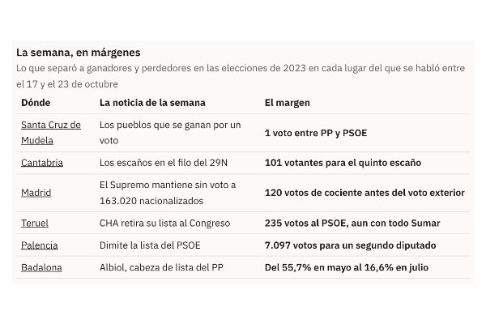
24 de octubre de 2026 · EspañaUn voto en Santa Cruz de Mudela, 101 en Cantabria, 7.097 en Palencia: la semana en que el 29N se contó en márgenesCrónica de la semana del 17 al 23 de octubre desde los mapas: Palencia, Badalona, Ceuta, Ferrol, La Revuelta, Teruel y el voto de los nietos. Los bloques apenas se mueven desde 2015; lo que decide son unos pocos cientos de votos en el sitio justo.- 23 de octubre de 2026 · EspañaSánchez en La Revuelta: entre los hombres jóvenes, Vox casi dobla al PSOESánchez fue a La Revuelta de Broncano a buscar el voto joven. En los nueve barómetros del CIS desde diciembre, Vox y el PSOE empatan entre los menores de 35, pero entre los hombres de esa edad Vox saca un 24,6% y el PSOE un 13,3%. La vivienda preocupa a la mitad de los jóvenes y la inmigración, más que a sus abuelos.
- 23 de octubre de 2026 · TeruelCHA se retira en Teruel: la única vez que la izquierda tuvo votos para un escaño fue en 2015, y fue divididaDesde 1977, ninguna lista a la izquierda del PSOE ha ganado un diputado por Teruel. En 2015, Podemos e IU-CHA sumaron 15.689 votos por separado, más que los 14.112 con los que el PP ganó el tercer escaño. En 2023, aunque todos los votantes de Sumar hubieran votado al PSOE, le habrían faltado 235 votos.
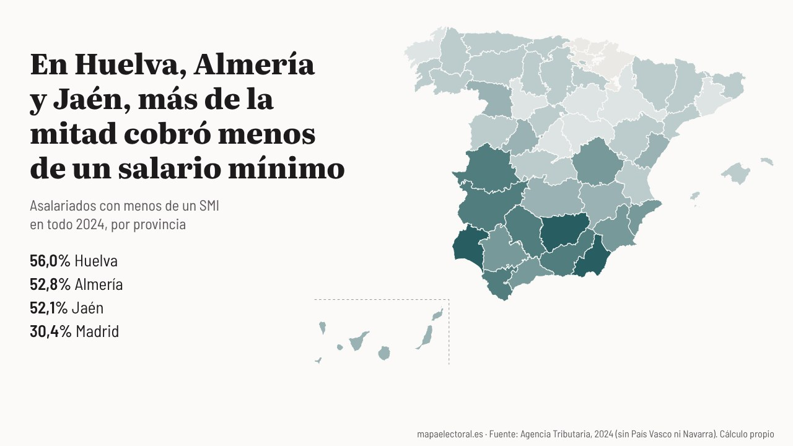
23 de octubre de 2026 · EspañaHuelva, Almería y Jaén: más de la mitad de sus asalariados cobró en 2024 menos de un salario mínimo al añoMientras Feijóo y Díaz discuten sobre el salario mínimo y el IRPF, los datos de Hacienda dicen que el 37% de los asalariados de España no llegó en 2024 a 15.876 euros en todo el año. En Huelva fue el 56%; en Madrid, el 30%. Las diez provincias con más sueldos bajos reparten 69 escaños el 29N.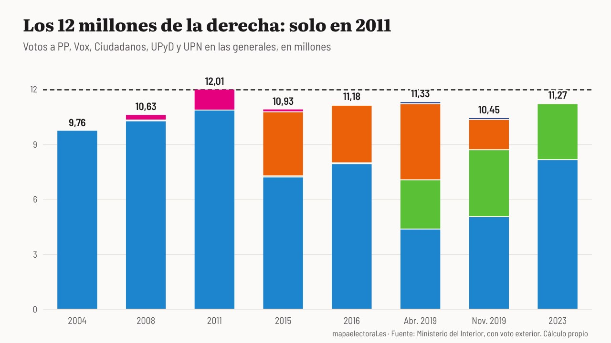
23 de octubre de 2026 · EspañaLos 12 millones de la derecha que cita Iván Redondo solo existieron una vez: en 2011Desde entonces, PP, Vox, Ciudadanos y UPyD han sumado entre 10,45 y 11,33 millones de votos. La ecuación de Redondo, con Vox en el 20% y el PP en el 27-28%, exige un bloque más grande que el de 2023, y con los votos de entonces daría a la derecha 177 escaños: mayoría absoluta. 23 de octubre de 2026 · EspañaFeijóo y el aborto «en la pública»: 77% en Galicia, 0,5% en MadridTres de cada cuatro abortos ya se hacen en hospitales públicos en la Galicia del PP; en Madrid, menos de uno de cada doscientos, y en Extremadura, ninguno. Con la eutanasia pasa lo mismo: en Baleares se pide casi siete veces más que en Murcia.
23 de octubre de 2026 · EspañaFeijóo y el aborto «en la pública»: 77% en Galicia, 0,5% en MadridTres de cada cuatro abortos ya se hacen en hospitales públicos en la Galicia del PP; en Madrid, menos de uno de cada doscientos, y en Extremadura, ninguno. Con la eutanasia pasa lo mismo: en Baleares se pide casi siete veces más que en Murcia.- 23 de octubre de 2026 · EspañaMota del Cuervo, 1.243 a 1.243: los pueblos del empate y los del voto unánimeEn 94 municipios los dos primeros partidos empataron en las generales de 2023; en tres de ellos, con más de mil votos. En otros cinco, un solo partido se llevó todos los votos, y en Orexa fueron 62 de 62 para EH Bildu.
- 23 de octubre de 2026 · EspañaSanta Cruz de Mudela, 874 a 873: los 185 pueblos que se ganaron por un votoEn las generales de 2023, en 185 municipios el partido más votado ganó por un solo voto. El récord de la democracia es de Almoradí, en 2019: el PP le sacó un voto a Vox con más de nueve mil votantes.
 22 de octubre de 2026 · EspañaFeijóo y Saiz se pelean por la hucha de las pensiones: donde más pesan en la renta, PP y PSOE se llevaron el 72,8% del voto, casi diez puntos más que donde menosEn las secciones donde las pensiones son un tercio de la renta, el bipartidismo resiste y Vox saca su peor dato. Pero no votan en bloque: en las más pobres gana el PSOE por 6,6 puntos y en las más ricas, el PP por 10,2.
22 de octubre de 2026 · EspañaFeijóo y Saiz se pelean por la hucha de las pensiones: donde más pesan en la renta, PP y PSOE se llevaron el 72,8% del voto, casi diez puntos más que donde menosEn las secciones donde las pensiones son un tercio de la renta, el bipartidismo resiste y Vox saca su peor dato. Pero no votan en bloque: en las más pobres gana el PSOE por 6,6 puntos y en las más ricas, el PP por 10,2.- 22 de octubre de 2026 · GaliciaAbascal llama a Galicia «espina clavada»: Vox no llegó al 5% en seis de cada diez secciones gallegas en 2023, y en el resto de España, en una de cada nueveLas cargas en María Pita fueron contra la protesta; en las urnas, A Coruña le dio el 4,8%. En toda Galicia, Vox sacó lo mismo en los barrios ricos que en los pobres, en las ciudades que en las aldeas: un mapa sin manchas.
 22 de octubre de 2026 · EspañaEl 29N deja en el aire la subida de tres millones de empleados públicos: en Teruel o Soria hay el doble por habitante que en Barcelona, y donde más pesan, Sumar sacó un tercio menosEl Gobierno promete el 4,5% en enero, pero no dice si lo aprobará antes de las elecciones. En las provincias con más empleo público, sobre todo del interior, Sumar sacó el 9,7% en 2023; donde menos, el 14,3%. Del PP, la diferencia casi desaparece sin Cataluña.
22 de octubre de 2026 · EspañaEl 29N deja en el aire la subida de tres millones de empleados públicos: en Teruel o Soria hay el doble por habitante que en Barcelona, y donde más pesan, Sumar sacó un tercio menosEl Gobierno promete el 4,5% en enero, pero no dice si lo aprobará antes de las elecciones. En las provincias con más empleo público, sobre todo del interior, Sumar sacó el 9,7% en 2023; donde menos, el 14,3%. Del PP, la diferencia casi desaparece sin Cataluña. 22 de octubre de 2026 · EspañaEl Constitucional deja sin voto a los nietos: los españoles adultos de América Latina crecen casi cinco veces más rápido y uno de cada tres está inscrito en MadridDesde 2023 hay 259.711 españoles más en América nacidos allí. México manda a Madrid el 58% de los suyos; Cuba, a Canarias la mitad; Uruguay, a Galicia. En Ourense, el 31% del censo ya vive fuera.
22 de octubre de 2026 · EspañaEl Constitucional deja sin voto a los nietos: los españoles adultos de América Latina crecen casi cinco veces más rápido y uno de cada tres está inscrito en MadridDesde 2023 hay 259.711 españoles más en América nacidos allí. México manda a Madrid el 58% de los suyos; Cuba, a Canarias la mitad; Uruguay, a Galicia. En Ourense, el 31% del censo ya vive fuera. 22 de octubre de 2026 · EspañaEn los barrios con más autónomos, el PP saca 13 puntos al PSOEEn los barrios con más trabajadores por cuenta propia, el PP sacó en 2023 un 41% y el PSOE un 28%; donde menos, al revés. Pasa con la misma renta, en Sevilla y en los pueblos. En Cataluña ese voto va a Junts. Vox, en cambio, no se mueve.
22 de octubre de 2026 · EspañaEn los barrios con más autónomos, el PP saca 13 puntos al PSOEEn los barrios con más trabajadores por cuenta propia, el PP sacó en 2023 un 41% y el PSOE un 28%; donde menos, al revés. Pasa con la misma renta, en Sevilla y en los pueblos. En Cataluña ese voto va a Junts. Vox, en cambio, no se mueve.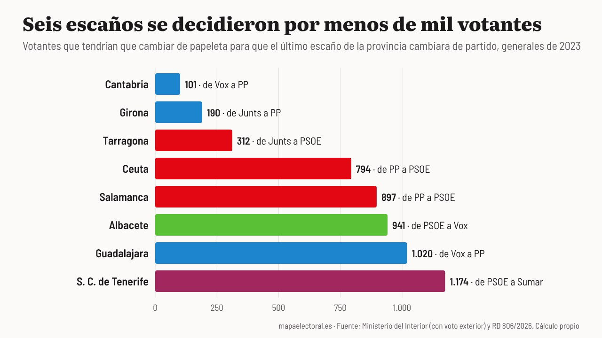
22 de octubre de 2026 · EspañaSeis escaños que se decidieron por menos de mil votantesCon los votos de 2023 y los escaños de 2026, el último escaño de Cantabria, Girona, Tarragona, Ceuta, Salamanca y Albacete habría cambiado de partido si menos de mil personas hubieran cambiado su voto. En Cantabria bastaban 101. Con menos de 5.000, hay 32 escaños en el filo.- 22 de octubre de 2026 · EspañaVox nunca ha llegado al 12% en los barrios de jubiladosEn la quinta parte de las secciones con más pensionistas, Vox sacó el 9,5% en 2023 y no pasó del 11,6% ni en su mejor año; donde menos hay, llegó al 20,5%. El PP gana esos barrios en 40 de 51 provincias. El PSOE, en Sevilla, Huelva, Cáceres y Cataluña.
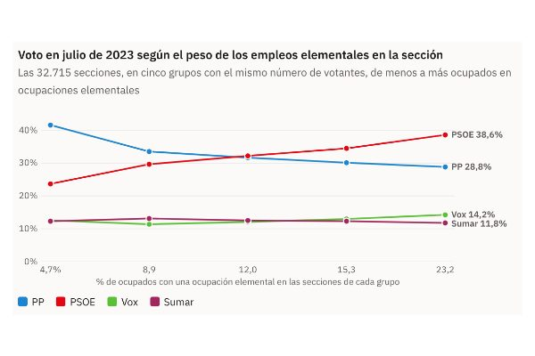
22 de octubre de 2026 · EspañaVox no gana en los barrios obreros: saca casi lo mismo donde viven peones que donde viven directivos, y el que sube es el PSOEEn la quinta parte de las secciones con más peones, limpiadoras y repartidores, Vox sacó en 2023 el 14,2%; en la de directivos y profesionales, el 12,6%. El PSOE pasa del 23,7% al 38,6%. Con la misma renta, donde hay más empleos elementales Vox saca lo mismo o menos. La excepción: el campo de Murcia y Almería.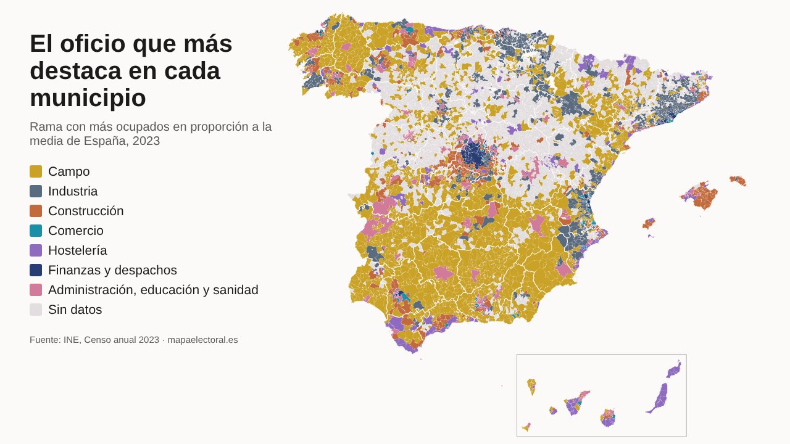
22 de octubre de 2026 · EspañaDonde abundan los despachos, el PP saca siete puntos más y el PSOE, cinco menosEn los municipios con más ocupados en finanzas y despachos profesionales de cada provincia, el PP sacó en 2023 el 35,8% y el PSOE el 29%; donde menos, el 28,3% y el 34,2%. Donde más gente vive del comercio, Vox saca un tercio más. Donde se vive de la hostelería, se vota menos. El mapa de los oficios de 4.090 municipios.- 22 de octubre de 2026 · EspañaDonde más preocupa la vivienda, más se votó a SumarEn Baleares, el País Vasco y Madrid más de la mitad de los entrevistados por el CIS cita la vivienda como problema; en Murcia, el 36%. Son las comunidades donde Sumar sacó más votos en 2023. Entre los votantes de Vox, solo uno de cada cuatro la nombra.
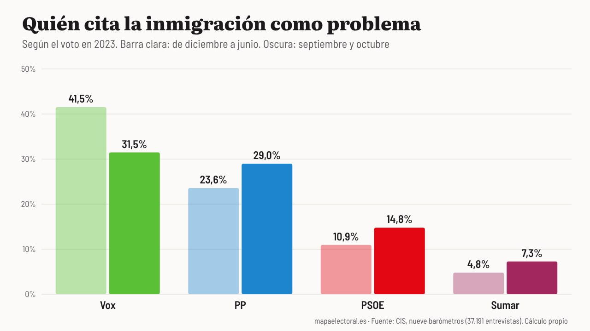
22 de octubre de 2026 · EspañaLa inmigración preocupa más, salvo a los votantes de VoxDesde septiembre la cita como problema el 20,4% de los entrevistados por el CIS, tres puntos más que en la primera mitad del año. Sube entre los votantes del PP, del 23,6% al 29%, y del PSOE, del 11% al 14,8%. Entre los de Vox baja, del 41,5% al 31,5%. 22 de octubre de 2026 · EspañaDonde más preocupa la inmigración, más votó Vox, salvo en CataluñaFuera de Cataluña, el País Vasco, Navarra y Galicia, en las provincias donde Vox pasó del 15% en 2023 el 20% de los entrevistados por el CIS cita la inmigración como problema; donde no llegó al 14%, el 15%. Hasta los votantes del PP la citan más allí: el 29%, frente al 21,5%. Tarragona y Girona, con poco voto a Vox, son las que más la citan.
22 de octubre de 2026 · EspañaDonde más preocupa la inmigración, más votó Vox, salvo en CataluñaFuera de Cataluña, el País Vasco, Navarra y Galicia, en las provincias donde Vox pasó del 15% en 2023 el 20% de los entrevistados por el CIS cita la inmigración como problema; donde no llegó al 14%, el 15%. Hasta los votantes del PP la citan más allí: el 29%, frente al 21,5%. Tarragona y Girona, con poco voto a Vox, son las que más la citan. 22 de octubre de 2026 · EspañaEn los barrios de rentistas, el PP saca el 51% y el PSOE, el 21%En los códigos postales donde dividendos, intereses y alquileres son más del 10% de la renta declarada a Hacienda, el PP dobló al PSOE en 2023. Donde no llegan al 4%, ganó el PSOE. Vox sacó lo mismo en unos y otros. Del barrio de Salamanca a Entrevías, de Pedralbes a Torreblanca.
22 de octubre de 2026 · EspañaEn los barrios de rentistas, el PP saca el 51% y el PSOE, el 21%En los códigos postales donde dividendos, intereses y alquileres son más del 10% de la renta declarada a Hacienda, el PP dobló al PSOE en 2023. Donde no llegan al 4%, ganó el PSOE. Vox sacó lo mismo en unos y otros. Del barrio de Salamanca a Entrevías, de Pedralbes a Torreblanca.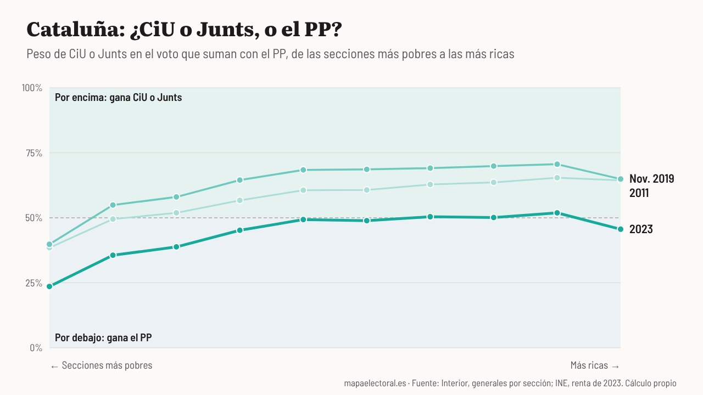
22 de octubre de 2026 · Cataluña, País Vasco y CanariasEl PP ya gana a Junts en seis de cada diez barrios catalanesEn 2011, CiU sacaba más votos que el PP en el 65% de las secciones de Cataluña; en 2023, Junts, en el 40%. La frontera de renta entre la derecha catalana y la estatal ha subido: el PP gana ahora en los barrios de renta baja y media y en los más ricos. En el País Vasco, el PNV solo pierde terreno arriba del todo, y en Canarias el PP gana en toda la escala.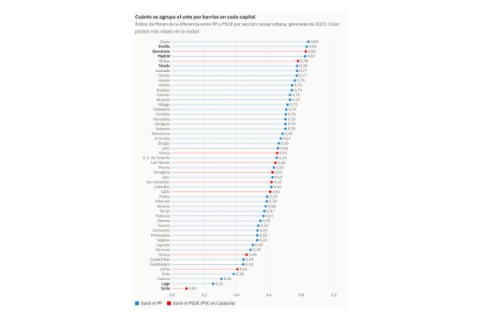
22 de octubre de 2026 · EspañaSevilla vota por barrios y Lugo, mezclada: el índice que mide qué capitales están partidas por el votoEl índice de Moran del voto por sección censal en las 52 capitales: Ceuta, Sevilla, Barcelona, Madrid, Bilbao, Toledo y Granada votan por bloques de barrios; Soria, Lugo y Cuenca, mezcladas. Lo que más se repite es la distancia de renta entre barrios.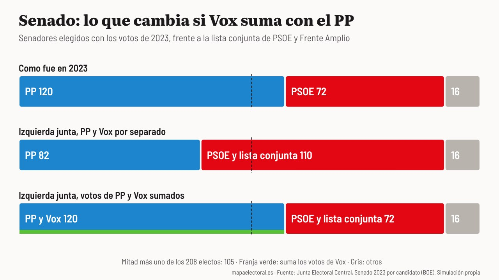
21 de octubre de 2026 · EspañaPP y Vox negocian el Senado: con los votos de 2023, sumar a Vox le devolvería a la derecha 19 provincias frente a la lista de PSOE y Frente AmplioPor separado, el PP bajaría de 120 a 82 senadores elegidos; con los votos de Vox, la derecha volvería a 120. Sevilla, Valencia y Asturias seguirían siendo de la izquierda incluso juntos. 21 de octubre de 2026 · EspañaTrump dice que España fue «invadida»: los vecinos nacidos fuera pasaron de 6,5 a 10 millones en siete años, y donde más crecieron Vox no sacó más votosLa «invasión» de la que habla son las 72.000 personas que entraron en Ceuta en dos días de julio, casi todas de vuelta en Marruecos poco después, según Interior. El cambio de fondo está en el padrón: 572.678 residentes nacidos fuera más solo en 2025. En los municipios donde más subió su peso, Vox sacó el 12,3% en 2023; donde menos, el 13%.
21 de octubre de 2026 · EspañaTrump dice que España fue «invadida»: los vecinos nacidos fuera pasaron de 6,5 a 10 millones en siete años, y donde más crecieron Vox no sacó más votosLa «invasión» de la que habla son las 72.000 personas que entraron en Ceuta en dos días de julio, casi todas de vuelta en Marruecos poco después, según Interior. El cambio de fondo está en el padrón: 572.678 residentes nacidos fuera más solo en 2025. En los municipios donde más subió su peso, Vox sacó el 12,3% en 2023; donde menos, el 13%.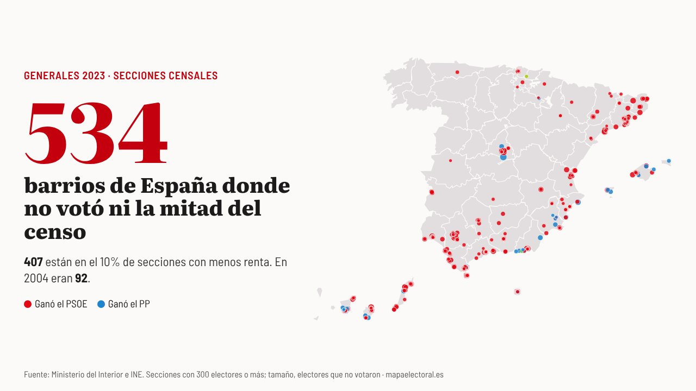
21 de octubre de 2026 · EspañaA seis semanas del 29N: en 534 barrios de España no votó ni la mitad del censo, y tres de cada cuatro están entre los más pobresEn las generales de 2023, la participación no llegó al 50% en 534 secciones censales; en 2004 eran 92. Están en la Cañada Real, el Polígono Sur, Los Asperones, La Mina, Son Gotleu, La Línea, Ceuta o Melilla. 407 están en el 10% de secciones con menos renta.- 21 de octubre de 2026 · EspañaAnte el 29N: del Polígono Sur a la Cañada Real, en 78 de los 93 barrios donde más pesan las ayudas sociales no votó ni la mitadDatos de Hacienda vía el INE, sección a sección: en esos 93 barrios las prestaciones pasan del 20% de la renta. En el quinto de secciones donde más pesan se votó 9,6 puntos menos y el PSOE sacó 10 más que el PP; donde más pesan las pensiones, casi igual que en el resto.
 21 de octubre de 2026 · MadridA cinco semanas del 29N: en la calle de los Hermanos García Noblejas, en Madrid, PP y PSOE se cambian de acera 12 veces, y el PP siempre gana en el lado con más rentaEn Madrid, una de cada cinco parejas de secciones censales vecinas eligió un ganador distinto en 2023. Las calles donde más se repite son Hermanos García Noblejas, General Ricardos, la avenida de las Águilas y Hacienda de Pavones. En Sinesio Delgado, entre Tetuán y Fuencarral, el salto llega a 27 puntos.
21 de octubre de 2026 · MadridA cinco semanas del 29N: en la calle de los Hermanos García Noblejas, en Madrid, PP y PSOE se cambian de acera 12 veces, y el PP siempre gana en el lado con más rentaEn Madrid, una de cada cinco parejas de secciones censales vecinas eligió un ganador distinto en 2023. Las calles donde más se repite son Hermanos García Noblejas, General Ricardos, la avenida de las Águilas y Hacienda de Pavones. En Sinesio Delgado, entre Tetuán y Fuencarral, el salto llega a 27 puntos. 20 de octubre de 2026 · EspañaEl Senado de 2023: 120 senadores para el PP con un tercio de los votosCon el voto limitado, el PP ganó el 57,7 % de los 208 senadores de 2023 con el 33,1 % del voto al Congreso. Vox y Sumar, con más del 12 % cada uno, no ganaron ninguno.
20 de octubre de 2026 · EspañaEl Senado de 2023: 120 senadores para el PP con un tercio de los votosCon el voto limitado, el PP ganó el 57,7 % de los 208 senadores de 2023 con el 33,1 % del voto al Congreso. Vox y Sumar, con más del 12 % cada uno, no ganaron ninguno. 20 de octubre de 2026 · EspañaEl Supremo deja sin voto a 163.020 nacionalizados por la ley de nietos: en 2023, el voto exterior ya le dio al PP un escaño del PSOE en MadridEl voto de fuera cambió el último diputado de Madrid por menos de 200 votos de cociente. Para el 29N, el censo de residentes en el extranjero ha crecido un 19%, y más de una cuarta parte del aumento está en Madrid.
20 de octubre de 2026 · EspañaEl Supremo deja sin voto a 163.020 nacionalizados por la ley de nietos: en 2023, el voto exterior ya le dio al PP un escaño del PSOE en MadridEl voto de fuera cambió el último diputado de Madrid por menos de 200 votos de cociente. Para el 29N, el censo de residentes en el extranjero ha crecido un 19%, y más de una cuarta parte del aumento está en Madrid.- 20 de octubre de 2026 · EspañaPSOE y Frente Amplio, juntos al Senado: con los votos de 2023, su lista habría ganado al PP en 17 provincias donde este sacó tres senadoresEl PP habría bajado de 120 a 82 senadores elegidos, y el PSOE con la lista conjunta habría pasado de la mitad. Albacete queda empatada; Murcia, tres provincias gallegas y casi toda Castilla y León siguen siendo del PP.
 20 de octubre de 2026 · BadalonaAlbiol, cabeza de lista del PP por Barcelona: en Badalona sacó el 55,7% en las municipales de 2023 y dos meses después el PP se quedó en el 16,6%Su lista fue la más votada en 145 de las 149 secciones de la ciudad en mayo; en las generales de julio, el PP no ganó en ninguna. En 2019 pasó lo mismo: 37,6% en municipales y 9,4% en generales.
20 de octubre de 2026 · BadalonaAlbiol, cabeza de lista del PP por Barcelona: en Badalona sacó el 55,7% en las municipales de 2023 y dos meses después el PP se quedó en el 16,6%Su lista fue la más votada en 145 de las 149 secciones de la ciudad en mayo; en las generales de julio, el PP no ganó en ninguna. En 2019 pasó lo mismo: 37,6% en municipales y 9,4% en generales. 20 de octubre de 2026 · PalenciaDimite la lista del PSOE en Palencia tras imponer Ferraz a Martínez Seijo: en 2023 al partido le faltaron 7.097 votos para un segundo diputadoEl PSOE solo ha sacado dos de los tres diputados de Palencia en 1982 y 1986. En abril de 2019 fue el más votado y se quedó a 478 votos del segundo escaño.
20 de octubre de 2026 · PalenciaDimite la lista del PSOE en Palencia tras imponer Ferraz a Martínez Seijo: en 2023 al partido le faltaron 7.097 votos para un segundo diputadoEl PSOE solo ha sacado dos de los tres diputados de Palencia en 1982 y 1986. En abril de 2019 fue el más votado y se quedó a 478 votos del segundo escaño.- 20 de octubre de 2026 · EspañaSeparados el 29N, como en 2015: con los votos de aquel año, una sola papeleta de Podemos e IU habría sacado 86 diputados, no 71El mapa de las coaliciones de la izquierda a la izquierda del PSOE en cada elección general desde 2015, con su hemiciclo. Cuando fueron juntos, en 2016, perdieron un millón de votos y se quedaron en los mismos 71 escaños.
 20 de octubre de 2026 · MadridDelgado contra Montero en Madrid: con los votos de 2023, Podemos necesitaría uno de cada cinco votos de Sumar para sacar escañoSeparados, el Frente Amplio y Podemos habrían sacado entre cinco y seis de los seis diputados que Sumar logró en Madrid en 2023. El escaño que se pierde iría al PSOE; el PP se queda en 16 en todos los casos.
20 de octubre de 2026 · MadridDelgado contra Montero en Madrid: con los votos de 2023, Podemos necesitaría uno de cada cinco votos de Sumar para sacar escañoSeparados, el Frente Amplio y Podemos habrían sacado entre cinco y seis de los seis diputados que Sumar logró en Madrid en 2023. El escaño que se pierde iría al PSOE; el PP se queda en 16 en todos los casos. 20 de octubre de 2026 · EspañaCon el PSOE andaluz en mínimos: Sevilla, Jerez y otros 170 municipios que votaron a la izquierda en todas las generales de 1977 a 2008 dieron en 2023 más votos a PP y VoxEn 172 municipios con 2,23 millones de electores, la izquierda estatal sumó más que la derecha en las diez generales de 1977 a 2008 y en 2023 fue al revés: Sevilla, Jerez, Móstoles, Algeciras, Chiclana. 115 cambiaron en 2011. El camino contrario lo han hecho 147, casi todos pequeños.
20 de octubre de 2026 · EspañaCon el PSOE andaluz en mínimos: Sevilla, Jerez y otros 170 municipios que votaron a la izquierda en todas las generales de 1977 a 2008 dieron en 2023 más votos a PP y VoxEn 172 municipios con 2,23 millones de electores, la izquierda estatal sumó más que la derecha en las diez generales de 1977 a 2008 y en 2023 fue al revés: Sevilla, Jerez, Móstoles, Algeciras, Chiclana. 115 cambiaron en 2011. El camino contrario lo han hecho 147, casi todos pequeños. 20 de octubre de 2026 · EspañaVox busca el voto de los barrios obreros: en la Región de Murcia, nueve de cada diez secciones pobres ya votan más a PP y Vox que a PSOE y SumarDe las 3.289 secciones más pobres de España, 1.089 votaron más a PP y Vox en 2023, sobre todo en Murcia, Almería y Alicante. De las 3.290 más ricas, 924 votaron más a PSOE y Sumar: casi todas en Cataluña y el País Vasco, y un centenar en el centro de Madrid.
20 de octubre de 2026 · EspañaVox busca el voto de los barrios obreros: en la Región de Murcia, nueve de cada diez secciones pobres ya votan más a PP y Vox que a PSOE y SumarDe las 3.289 secciones más pobres de España, 1.089 votaron más a PP y Vox en 2023, sobre todo en Murcia, Almería y Alicante. De las 3.290 más ricas, 924 votaron más a PSOE y Sumar: casi todas en Cataluña y el País Vasco, y un centenar en el centro de Madrid.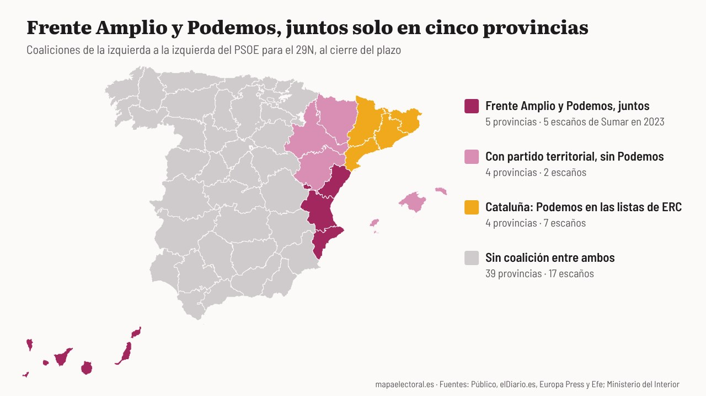
17 de octubre de 2026 · EspañaFrente Amplio y Podemos solo irán juntos en cinco provincias: en las otras 47, Sumar sacó 26 de sus 31 diputados en 2023Se cerró el plazo de coaliciones. Habrá papeleta común en Canarias y la Comunitat Valenciana; en Baleares y Aragón, el Frente Amplio va con partidos territoriales y sin Podemos, y en Cataluña Podemos entra en las listas de ERC. 17 de octubre de 2026 · CanariasNueva Canarias, Podemos, IU y Sumar se unen en Canarias: con los votos de 2023, la suma habría pasado de uno a tres diputadosJuntos le habrían quitado un escaño al PP en Las Palmas y otro al PSOE en Santa Cruz de Tenerife, este por unos 1.600 votos. Canarias es una de las dos comunidades donde el Frente Amplio y Podemos irán juntos el 29N.
17 de octubre de 2026 · CanariasNueva Canarias, Podemos, IU y Sumar se unen en Canarias: con los votos de 2023, la suma habría pasado de uno a tres diputadosJuntos le habrían quitado un escaño al PP en Las Palmas y otro al PSOE en Santa Cruz de Tenerife, este por unos 1.600 votos. Canarias es una de las dos comunidades donde el Frente Amplio y Podemos irán juntos el 29N.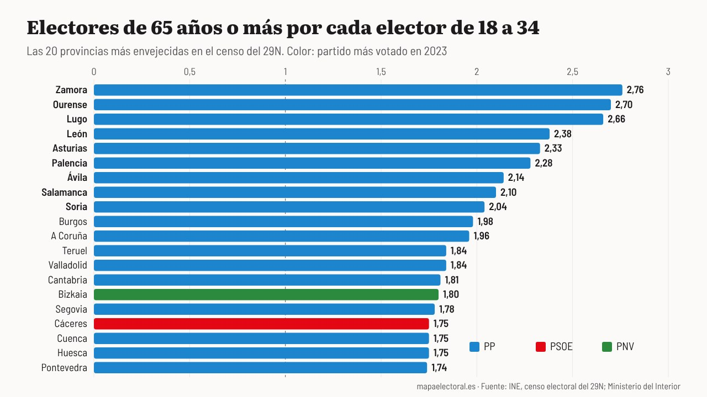
16 de octubre de 2026 · EspañaFeijóo y Sánchez chocan por las pensiones en un censo con 10,2 millones de electores de 65 años o más: superan a los de 18 a 34 en 49 de las 52 provinciasEn Zamora, Ourense y Lugo hay casi tres electores mayores por cada joven. Las nueve provincias donde los mayores doblan a los jóvenes eligen 34 diputados, y en todas ganó el PP en 2023.- 16 de octubre de 2026 · EspañaEl CIS de Tezanos da al PSOE 11,8 puntos de ventaja: en las tres generales desde 2019 sobrestimó su margen sobre el PP entre 1 y 6,9 puntosEn noviembre de 2019, el CIS de octubre daba al PSOE 14,1 puntos sobre el PP y fueron 7,2. En 2023, la última encuesta ponía al PSOE 1,4 puntos por delante y ganó el PP por 1,4.
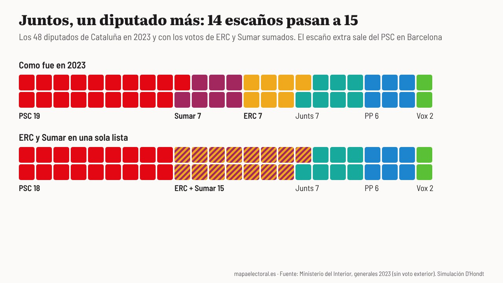
16 de octubre de 2026 · CataluñaRufián admite «He fracasado»: con los votos de 2023, ERC y Sumar juntos habrían sacado un solo diputado más en Cataluña, y por 126 votosEl escaño habría salido de Barcelona y se lo habrían quitado al PSC. En Girona, Lleida y Tarragona, la suma no habría cambiado nada.- 16 de octubre de 2026 · EspañaOcupación: en las provincias con más demandas ante los juzgados, Vox sacó el 15,9% en 2023, frente al 11,5% en las que menosLos datos del CGPJ publicados hoy: los desahucios por alquiler caen un 57,7% y las demandas por ocupación, un 9%. Por habitante, Ávila, Baleares y Girona encabezan las demandas; el cruce con el voto de 2023 apenas dibuja un patrón.
 15 de octubre de 2026 · EspañaEAPN presenta su informe sobre pobreza y territorio: en los barrios más pobres se vota 15 puntos menos que en los más ricos, el doble de distancia que en 2004En el 10% de secciones censales con menos renta votó el 62,1% en las generales de 2023; en el 10% más rico, el 77,4%. En las grandes ciudades la brecha llega a 22,5 puntos. El PSOE gana en los barrios pobres y el PP, en los ricos.
15 de octubre de 2026 · EspañaEAPN presenta su informe sobre pobreza y territorio: en los barrios más pobres se vota 15 puntos menos que en los más ricos, el doble de distancia que en 2004En el 10% de secciones censales con menos renta votó el 62,1% en las generales de 2023; en el 10% más rico, el 77,4%. En las grandes ciudades la brecha llega a 22,5 puntos. El PSOE gana en los barrios pobres y el PP, en los ricos. 15 de octubre de 2026 · EspañaOnce ministros en las listas del PSOE: con los votos de 2023, el puesto más ajustado es el de Ana Redondo en Valladolid, que caería si el PSOE perdiera el 17% de sus votosRobles irá de número dos por Madrid y Albares encabezará Cádiz. Hemos calculado cuánto voto podría perder el PSOE en cada provincia sin que el ministro se quedara fuera: en diez de los once casos, más del 60%.
15 de octubre de 2026 · EspañaOnce ministros en las listas del PSOE: con los votos de 2023, el puesto más ajustado es el de Ana Redondo en Valladolid, que caería si el PSOE perdiera el 17% de sus votosRobles irá de número dos por Madrid y Albares encabezará Cádiz. Hemos calculado cuánto voto podría perder el PSOE en cada provincia sin que el ministro se quedara fuera: en diez de los once casos, más del 60%.- 15 de octubre de 2026 · EspañaCiudadanos se suma a Democracia 21 en Madrid y Barcelona: en los barrios madrileños donde Cs fue más fuerte en 2019, el PP pasó del 18,2% al 49,2% en 2023Miriam González encabezará una lista con Ciudadanos y UCIN solo en Madrid y Barcelona. En el 10% de secciones de Madrid con más voto a Cs en abril de 2019 (29,5%), el PP ganó 31,1 puntos en 2023. En Barcelona, el mapa naranja era otro: subieron a la vez el PSC y el PP.
- 15 de octubre de 2026 · CataluñaEl CEO da a Aliança Catalana hasta 25 escaños: en el Parlament de 2024 sacó el 3,8%, pero el 24,9% en el Ripollès y el 7,8% en los pueblos de menos de 1.000 electoresAliança no se presenta el 29N, pero el barómetro del CEO la sitúa como tercera fuerza en unas elecciones al Parlament. Su único resultado oficial dibuja un mapa con centro en el Ripollès, fuerte en el norte de Girona y el interior, y débil en el área de Barcelona.
- 15 de octubre de 2026 · EspañaCómo votó tu calle: una de cada cuatro secciones censales eligió en 2023 un ganador distinto al de su municipioGuía para buscar tu dirección en el mapa electoral calle a calle: qué es una sección censal, qué dice la ficha de cada una (voto, participación, renta, edad) y qué no dice.
- 15 de octubre de 2026 · EspañaLa calle que parte el voto: el PP sacó el 55,9% a un lado de la avenida de Francia, en València, y el 16,4% al otroEn nueve grandes ciudades, una de cada cinco parejas de secciones censales vecinas eligió un ganador distinto en 2023. Seis calles donde se ve, de El Palo a la Diagonal, y un patrón de renta.
- 15 de octubre de 2026 · MadridMadrid llega al 29N teñida de azul: el PP ganó en 1.603 de sus 2.450 secciones y el PSOE solo resiste en cuatro distritos del surEn 2023, 521 secciones censales de la capital pasaron del PSOE al PP. Doscientas se decidieron por menos de dos puntos, la mitad en Latina, Carabanchel, Ciudad Lineal y Centro.
- 15 de octubre de 2026 · BarcelonaBarcelona pasó del amarillo al rojo: ERC ganó en 563 secciones en 2019 y en ninguna en 2023El PSC fue el más votado en nueve de cada diez secciones censales de la ciudad en las últimas generales. Solo Sarrià-Sant Gervasi se le resistió, y allí el que ganó fue el PP.
- 15 de octubre de 2026 · ValènciaValència borró a Compromís del mapa: ganaba en 101 secciones en 2019 y en 15 en 2023El PP pasó a ser el más votado en 335 de las 591 secciones censales de la ciudad. El PSOE resiste en un arco de barrios del norte, el oeste y el mar, y 64 secciones se decidieron por menos de dos puntos.
 15 de octubre de 2026 · SevillaSevilla tiene dos mapas: el PP ganó en votos el 23J, pero el PSOE fue el primero en 286 de sus 521 seccionesEl PSOE ganó en todas las secciones de Cerro-Amate y Norte. Allí se vota mucho menos que en Los Remedios o Nervión, y la diferencia de participación entre barrios ricos y pobres es, con la de Málaga, la mayor de las grandes ciudades.
15 de octubre de 2026 · SevillaSevilla tiene dos mapas: el PP ganó en votos el 23J, pero el PSOE fue el primero en 286 de sus 521 seccionesEl PSOE ganó en todas las secciones de Cerro-Amate y Norte. Allí se vota mucho menos que en Los Remedios o Nervión, y la diferencia de participación entre barrios ricos y pobres es, con la de Málaga, la mayor de las grandes ciudades.- 15 de octubre de 2026 · ZaragozaZaragoza, empate barrio a barrio: el PSOE ganó en 250 secciones y el PP en 245, y 53 se decidieron por menos de dos puntosEl PP sacó seis puntos más en votos, pero el mapa de Zaragoza es el más igualado de las grandes ciudades. En Delicias, el PSOE ganó por dos décimas.
- 15 de octubre de 2026 · MálagaEn Málaga, la renta decide quién vota: el 46,7% en los barrios más pobres y el 80,6% en los más ricosEs la mayor brecha de participación de las ocho grandes ciudades analizadas. En 2023, 116 secciones censales de Málaga pasaron del PSOE al PP, y el PP ganó en 223 de las 435.
 15 de octubre de 2026 · MurciaMurcia, de verde a azul: Vox ganó en 164 secciones en 2019 y en una en 2023El PP fue el más votado en 376 de las 387 secciones censales del municipio. Pero Vox sigue sacando en las pedanías de la huerta y el campo su mejor resultado, y el PSOE solo ganó en diez.
15 de octubre de 2026 · MurciaMurcia, de verde a azul: Vox ganó en 164 secciones en 2019 y en una en 2023El PP fue el más votado en 376 de las 387 secciones censales del municipio. Pero Vox sigue sacando en las pedanías de la huerta y el campo su mejor resultado, y el PSOE solo ganó en diez. 15 de octubre de 2026 · PalmaPalma, la gran ciudad que menos vota: el 62,5% en 2023, y menos del 35% en algunas secciones del esteEl PP pasó de ganar en 50 secciones censales a ganar en 134, y el PSOE resiste en el este, donde menos se vota. En el norte, el PP ganó por una décima.
15 de octubre de 2026 · PalmaPalma, la gran ciudad que menos vota: el 62,5% en 2023, y menos del 35% en algunas secciones del esteEl PP pasó de ganar en 50 secciones censales a ganar en 134, y el PSOE resiste en el este, donde menos se vota. En el norte, el PP ganó por una décima.- 15 de octubre de 2026 · LleidaMontse Mínguez dimite y deja la lista de Lleida: el PSC duplicó allí su voto en 2023 y le ganó el cuarto diputado al PP por unos 3.500 votosLa portavoz del PSOE dimitió el 16 de octubre por la polémica de los negocios inmobiliarios de su pareja, y Cristina Morón la sustituye como número uno del PSC por Lleida. En 2023, el PSC pasó del 14,6% al 29,8% en la provincia y ganó en 79 municipios, frente a 8 en 2019.
- 15 de octubre de 2026 · Ceuta y MelillaEl Rey visita las dos ciudades que menos votan: en Melilla votó el 49,8% en 2023, y en una sección de la periferia, el 19%Ceuta y Melilla reciben a Felipe VI a mes y medio del 29N. Son las dos circunscripciones con menos participación de España, y dentro de cada una la brecha entre barrios supera los 20 puntos: en el tercio de secciones con menos renta de Melilla votó el 32%; en el de más renta, el 60%.
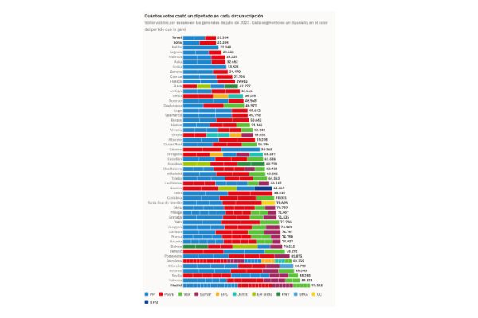
15 de octubre de 2026 · EspañaUn diputado cuesta 25.300 votos en Teruel y 97.500 en Madrid: el precio del escaño, provincia a provinciaEn 2023, un escaño en Madrid costó casi cuatro veces más votos que en Teruel o Soria, y Sumar pagó cada diputado a 98.225 votos frente a los 59.570 del PP. Con un simulador que reparte los votos de 2023 y 2019 por comunidades o en una circunscripción única.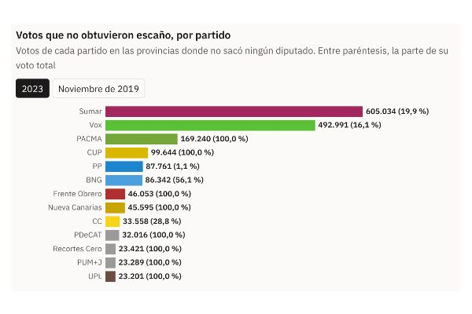
15 de octubre de 2026 · España1,9 millones de votos no eligieron a nadie en 2023: en Teruel, Lleida y Soria, uno de cada tresFueron el 7,8 % del voto válido, frente al 10,6 % de noviembre de 2019. Sumar dejó sin escaño el 19,9 % de sus votos y Vox, el 16,1 %; el PSOE, el 0,2 %. Por partido y provincia, con los escaños que se decidieron por menos de mil votos.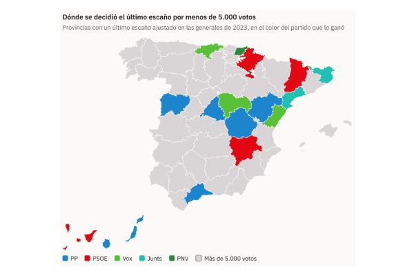
14 de octubre de 2026 · EspañaQué provincias pueden decidir el 29N: en 17, el último escaño se resolvió en 2023 por menos de 5.000 votosEn Girona, al PP le faltaron 285 votos para quitarle el último escaño a Junts; en Cantabria, 404 para quitárselo a Vox. Repasamos el último diputado de cada provincia en 2023 y el margen con el que se decidió, sin proyectar el resultado de 2026.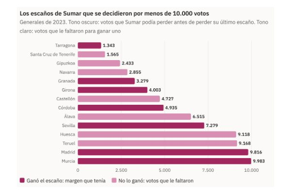
14 de octubre de 2026 · EspañaDónde puede costar más la división a la izquierda: en ocho provincias, Sumar ganó o perdió un escaño en 2023 por menos de 5.000 votosEl Frente Amplio, Podemos, ERC y Compromís negocian sus papeletas antes del cierre de coaliciones del 16 de octubre. En Tarragona, Sumar habría perdido su escaño con 1.343 votos menos; en Santa Cruz de Tenerife se quedó a 1.565 de ganarlo. Datos de 2023 y de 2019, separando lo medido de lo hipotético.- 14 de octubre de 2026 · EspañaVivienda, inmigración y economía: en el CIS de octubre la vivienda salta del 37,5% al 55,7% y ya es el problema más citado por los votantes de PP, PSOE y SumarPP y PSOE abren la campaña del 29N hablando de vivienda. En el barómetro de octubre, la vivienda va del 81% de los votantes de Sumar al 35% de los de Vox, para quienes solo la supera el Gobierno; la inmigración apenas se mueve y la economía es la que menos distingue a los electorados.
- 14 de octubre de 2026 · EspañaAbascal promete pagar las pensiones «como sea», pero Vox saca su peor resultado en los barrios más envejecidos: 9,8%, frente al 16,2% en los más jóvenesLas pensiones entran en la campaña del 29N. En el 10% de secciones con más vecinos de 65 años o más, el PP sacó el 43,6% en 2023 y Vox, el 9,8%. El patrón se repite en las grandes ciudades y a igual renta.
- 13 de octubre de 2026 · MadridTras el saludo gélido de Sánchez en el 12‑O: en Madrid, el PP de Almeida sacó más votos que el de Feijóo, con 85.000 votantes menosSánchez apenas cruzó palabras con Ayuso y Almeida en el desfile, a siete semanas del 29N. En la capital, el PP sacó 729.304 votos en las municipales de mayo de 2023 y 720.547 en las generales de julio, cuando votó más gente. Vox subió del 9,1% al 12,4%.
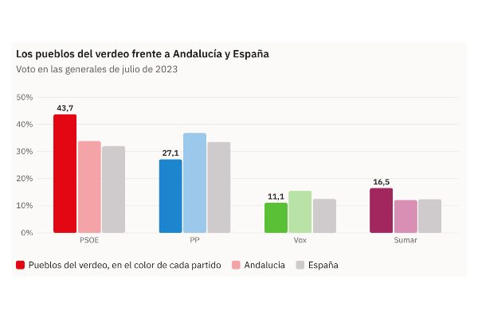
13 de octubre de 2026 · SevillaLa aceituna de mesa, por debajo de coste: en sus dos grandes comarcas, el PP no ganó en ninguno de los 23 pueblos en 2023Los agricultores denuncian que se les paga la aceituna por debajo de lo que cuesta recogerla. En las comarcas de Osuna y Marchena, las de más olivar de mesa de Andalucía, el PSOE sacó el 43,7% en las generales de 2023, diez puntos más que en el conjunto de la comunidad. Vox se quedó en el 11,1%. 9 de octubre de 2026 · EspañaLa huelga del 11N apela a los barrios que menos votan: donde más paro hay, la participación cae al 61%CCOO, UGT y el Sindicato de Inquilinas convocan la primera huelga general conjunta desde 2012 a 18 días de las generales. En julio de 2023, el 10% de secciones con más paro votó quince puntos menos que el 10% con menos paro. A igual renta, la distancia se mantiene.
9 de octubre de 2026 · EspañaLa huelga del 11N apela a los barrios que menos votan: donde más paro hay, la participación cae al 61%CCOO, UGT y el Sindicato de Inquilinas convocan la primera huelga general conjunta desde 2012 a 18 días de las generales. En julio de 2023, el 10% de secciones con más paro votó quince puntos menos que el 10% con menos paro. A igual renta, la distancia se mantiene.- 9 de octubre de 2026 · MadridEn Madrid, el PSOE saca diez puntos más cuando se vota al Gobierno que cuando se vota al alcaldeLa bronca entre Ayuso y Más Madrid en la Asamblea vuelve a enfrentar a las dos fuerzas que dominan la política madrileña. En la ciudad de Madrid, el PSOE sacó el 16,8% en las municipales de mayo de 2023 y el 27,4% en las generales de julio. Fue más alto en las generales en todas las secciones menos una.
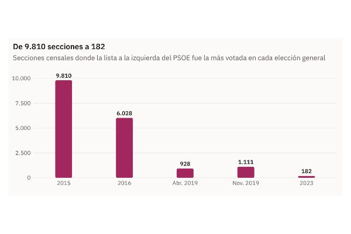
9 de octubre de 2026 · EspañaEl espacio a la izquierda del PSOE fue el más votado en 9.810 secciones en 2015; en 2023, en 182Podemos antepone sus primarias y se aleja del Frente Amplio. Antes de saber cuántas papeletas habrá a la izquierda del PSOE, los datos por sección muestran de dónde parte ese espacio: del 24,4% de 2015 al 12,3% de 2023, con caídas en todo tipo de municipios.- 9 de octubre de 2026 · EspañaVox saca casi lo mismo donde uno de cada tres vecinos nació fuera que donde casi nadie lo hizoLa inmigración a Euskadi bajó ligeramente en 2025, según los datos que publica esta semana la prensa vasca. Euskadi es también donde menos vota a Vox: el 2,6% en 2023. En el resto de España, el voto a Vox apenas cambia entre las secciones con menos del 5% y con más del 30% de población nacida en el extranjero.
- 8 de octubre de 2026 · GaliciaDel 12% al 2,9% y de vuelta al 9,5%: el nacionalismo gallego que deja BeirasEl BNG pasó del 12,0 % en Galicia en 2004 al 2,9 % en 2016, cuando En Marea sacó el 22,4 %, y en 2023 volvió al 9,5 %. Mapas por municipio y sección.
- 8 de octubre de 2026 · BarcelonaLa Barcelona que tendría que reconquistar Colau: los comuns ganaban en 837 secciones y ahora en 23En Comú Podem ganó en 837 de las 1.068 secciones de Barcelona en 2015 (26,7 %). En 2023, Sumar-En Comú Podem ganó en 23 (17,0 %). La caída fue mayor en los barrios de renta baja.
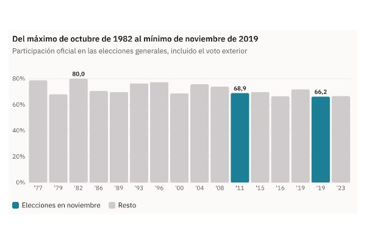
8 de octubre de 2026 · EspañaEl 29N repite mes con mal recuerdo: el último noviembre dejó la participación más baja de la democraciaEl 10N de 2019 dejó un 66,2 % de participación, el mínimo desde 1977; el máximo, 80,0 %, también fue en otoño, en octubre de 1982. Entre abril y noviembre de 2019 la participación cayó en el 98 % de las secciones.- 8 de octubre de 2026 · CataluñaCon Puigdemont de candidato, Junts duplica su voto: del 11% en el Congreso al 22% en el ParlamentEn las generales de 2023 Junts sacó en Cataluña el 11,2 % (392.609 votos) y ganó en 465 secciones. En las autonómicas de 2024, con Puigdemont como candidato, el 21,6 % y 681.470 votos, y ganó en 1.936, aunque votó menos gente.
- 8 de octubre de 2026 · CataluñaSumados, ERC y los comuns habrían sido la lista más votada en 1.431 secciones de Cataluña en 2023; por separado, en 232Rufián quiere ser el candidato de ERC «acompañado de otras fuerzas de izquierdas». En 2023 ERC sacó en Cataluña el 13,2 %, casi la mitad que en 2019. Con los votos de los comuns sumados sección a sección, el mapa cambia, aunque el PSC sigue por delante.
- 8 de octubre de 2026 · AndalucíaAndalucía vota casi diez puntos más al PSOE cuando elige al Gobierno que cuando elige a la JuntaMontero no irá en las listas del 29N tras el peor resultado del PSOE en unas andaluzas, el 22,7 % de mayo. En las generales de 2023 el PSOE andaluz sacó el 33,5 %. Lo que sí ha perdido es el mapa: en 2004 ganaba en tres de cada cuatro secciones; en 2023, en menos de la mitad.
Bastiones y desiertos
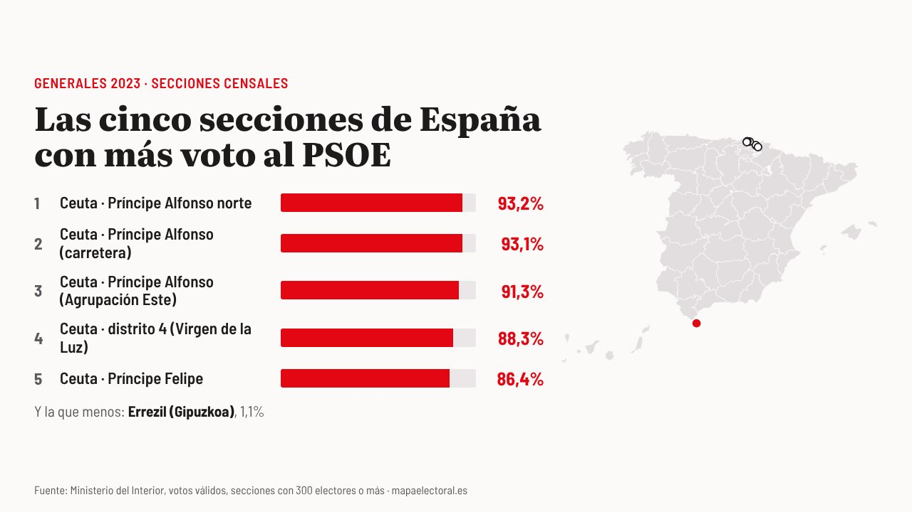
20 de octubre de 2026 · Ceuta y País VascoLos 5 barrios de España donde el PSOE saca más del 86% de los votos: todos están en Ceuta (y dónde no llega al 2,5%)En el Príncipe Alfonso, el PSOE sacó el 93,2% el 23J, con una participación del 44%. Seis de las ocho secciones de España donde pasó del 80% están en Ceuta. Y en Errezil, Amoroto o Kortezubi no llegó al 2%.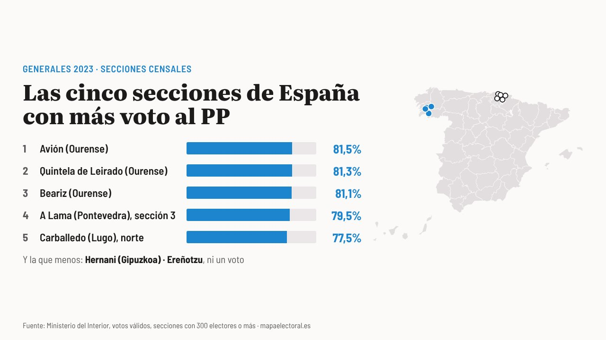
20 de octubre de 2026 · Galicia y País VascoLos 5 pueblos de España donde el PP saca hasta el 81,5% de los votos: todos en Galicia (y los dos rincones vascos donde no tuvo ni un voto)Avión (81,5%), Quintela de Leirado (81,3%) y Beariz (81,1%), en Ourense, son las únicas secciones de España donde el PP pasó del 80% el 23J. En Hernani y Amoroto, en cambio, no tuvo ni un voto.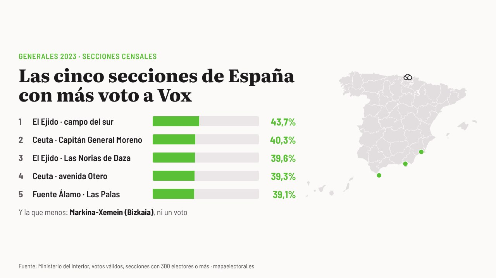
20 de octubre de 2026 · El Ejido, Ceuta y País VascoLos 5 barrios de España donde Vox saca más del 39% de los votos: El Ejido, Ceuta y el campo de Murcia (y los pueblos vascos donde no tuvo ni un voto)En el campo de El Ejido, Vox sacó el 43,7% el 23J, su máximo en España. Ninguna sección pasó del 45%. Las cinco primeras están en El Ejido, Ceuta y Fuente Álamo; en 18 secciones vascas y navarras no tuvo ni un voto.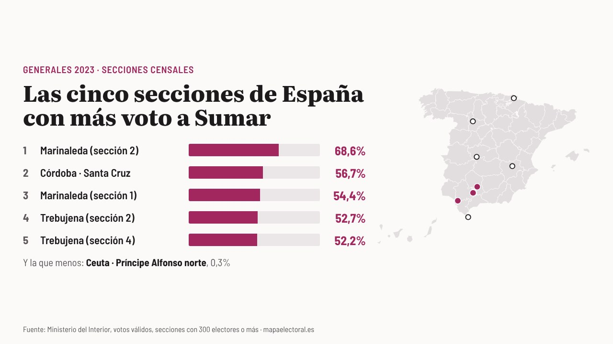
20 de octubre de 2026 · Marinaleda, Trebujena y CórdobaLos 5 pueblos de España donde Sumar saca más del 52% de los votos: Marinaleda, Trebujena y una pedanía de Córdoba (y dónde no llega al 0,5%)En Marinaleda, Sumar sacó el 68,6% el 23J, su máximo en España. Las cinco secciones donde pasó del 50% están en Marinaleda, Trebujena y Santa Cruz (Córdoba). En el Príncipe de Ceuta o en Los Navalucillos no llegó al 0,5%.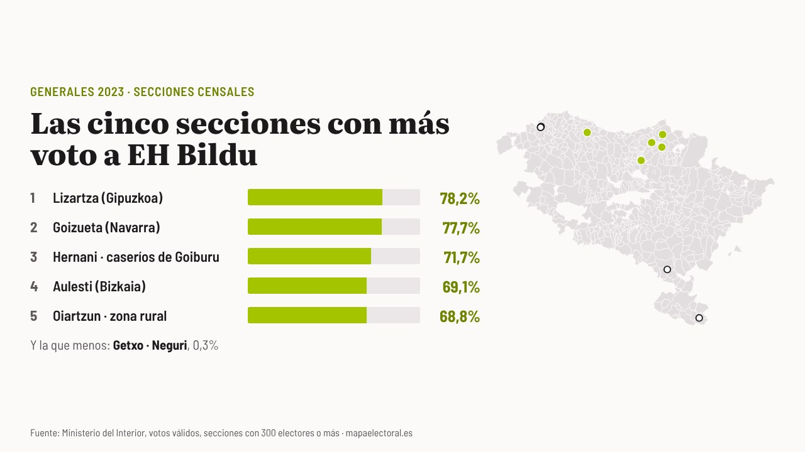
20 de octubre de 2026 · País Vasco y NavarraLos 5 pueblos donde EH Bildu saca más del 68% de los votos: de Lizartza a Goizueta (y los barrios de Getxo donde no llega al 1%)En Lizartza, EH Bildu sacó el 78,2% el 23J, y en Goizueta, el 77,7%. Pasó del 60% en 25 secciones, el doble que en 2019. En Neguri y Algorta, en Getxo, se quedó en el 0,3%.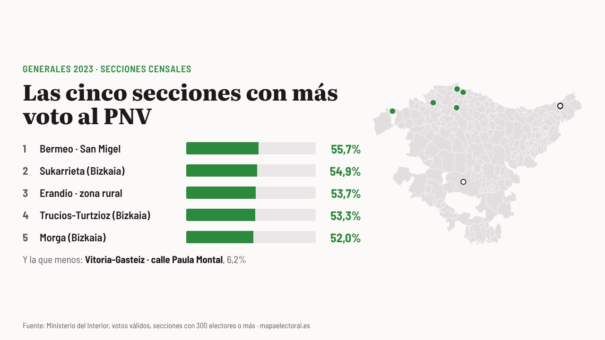
20 de octubre de 2026 · País VascoLos 5 pueblos donde el PNV saca más del 52% de los votos: Bermeo y la costa de Bizkaia (y los barrios de Errenteria donde no llega al 8%)En un barrio de Bermeo, el PNV sacó el 55,7% el 23J, su máximo; en 2019 tenía allí el 65%. Pasó del 40% en 75 secciones, frente a 315 en 2019. Sus mínimos, en Errenteria y Vitoria, rondan el 6%.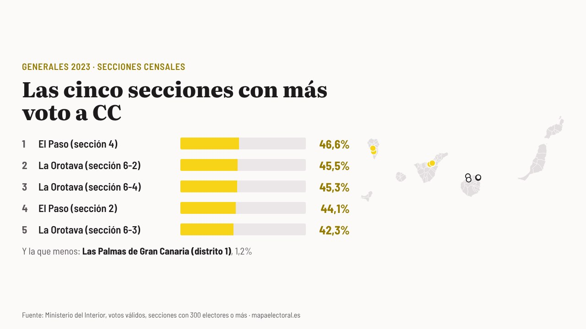
20 de octubre de 2026 · CanariasLos 5 barrios de Canarias donde Coalición Canaria saca más del 42%: El Paso y La Orotava (y el Gáldar de su nuevo socio, donde no llega al 2%)En El Paso, CC sacó el 46,6% el 23J, su máximo; le siguen tres secciones de La Orotava. En Gáldar, el pueblo de Teodoro Sosa, que ahora encabeza la lista conjunta en Las Palmas, se quedó en el 1,5%.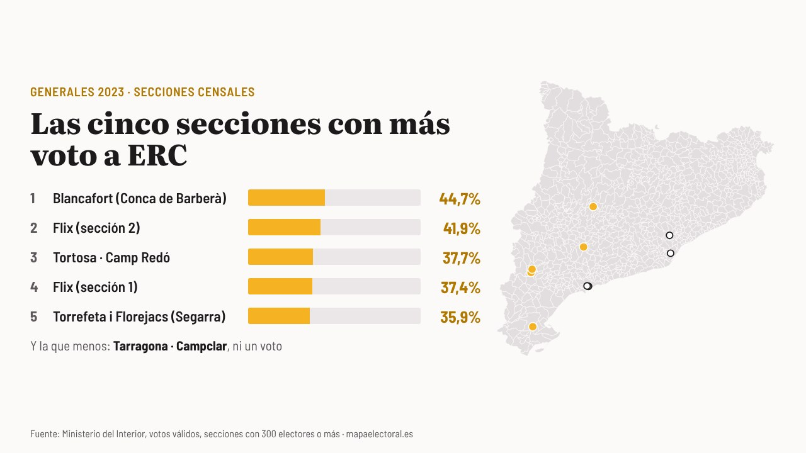
20 de octubre de 2026 · CataluñaLos 5 pueblos donde ERC saca más del 35% de los votos: Blancafort, Flix y Tortosa (y el barrio de Tarragona donde no tuvo ni un voto)En Blancafort, ERC sacó el 44,7% el 23J, su máximo en Cataluña, y en Flix, el 41,9%. Pasó del 30% en 42 secciones, frente a 734 en 2019. En una sección de Campclar, en Tarragona, no tuvo ni un voto.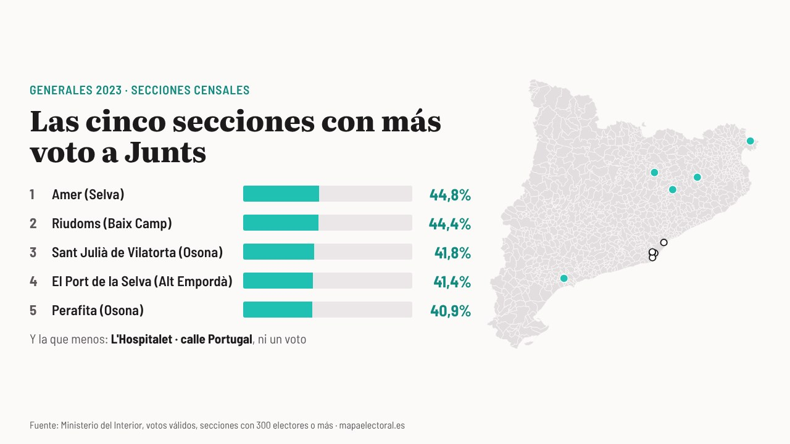
20 de octubre de 2026 · CataluñaLos 5 pueblos donde Junts saca más del 40% de los votos: encabeza Amer, el de Puigdemont (y los barrios del área de Barcelona donde no tuvo ni un voto)En Amer, el pueblo de Puigdemont, Junts sacó el 44,8% el 23J, su máximo en Cataluña. Pasó del 30% en 128 secciones, frente a 310 en 2019. En 14 secciones, casi todas del cinturón de Barcelona, no tuvo ni un voto. 20 de octubre de 2026 · GaliciaEl BNG solo ganó en una sección de España: los 5 pueblos donde más le votan, de Vilar de Santos a Allariz (y los de Ourense donde no llega al 2%)El BNG solo fue el más votado en una sección de España, en Allariz, por 0,2 puntos. Su máximo es el 35,1% de Vilar de Santos, donde ganó el PP. En A Lama, Boborás, Padrenda o Avión no llegó al 2%.
20 de octubre de 2026 · GaliciaEl BNG solo ganó en una sección de España: los 5 pueblos donde más le votan, de Vilar de Santos a Allariz (y los de Ourense donde no llega al 2%)El BNG solo fue el más votado en una sección de España, en Allariz, por 0,2 puntos. Su máximo es el 35,1% de Vilar de Santos, donde ganó el PP. En A Lama, Boborás, Padrenda o Avión no llegó al 2%.
Vivienda y voto
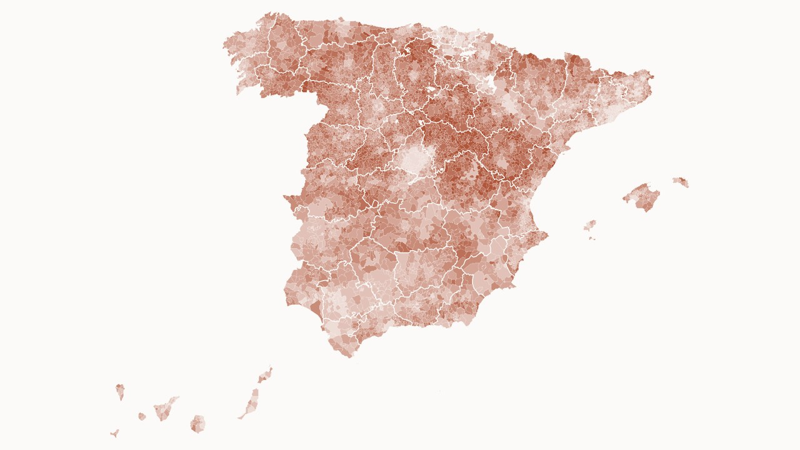
22 de octubre de 2026 · EspañaEn 4.441 municipios hay más casas sin vecinos que con ellosEn 4.441 de los 8.131 municipios, más de la mitad de las viviendas no son residencia habitual. Mapas de las casas vacías (Galicia) y de temporada (costa y sierras). Ávila (59,4%), Teruel y Soria encabezan el interior; Oropesa del Mar (85%) y Peníscola, la costa. El PP saca más donde hay más casas vacías, pero por edad y provincia. Los pueblos de segunda residencia votan cuatro puntos menos.- 14 de octubre de 2026 · MadridAlmeida pone a los acampados de Sol «en el mismo plano» que los ultras: Centro, el distrito con más inquilinos de Madrid, es donde Más Madrid y Podemos-IU sacaron su mejor resultado, el 41%La acampada por la vivienda sigue en la Puerta del Sol desde el 26 de septiembre. Centro es el distrito de Madrid con más hogares de alquiler, el 37,9%, y donde Más Madrid y Podemos-IU sacaron su mejor resultado en las municipales de 2023: el 41,0%.
- 8 de octubre de 2026 · EspañaDespués de Maricarmen: los barrios de inquilinos votan diez puntos menosEn el 10 % de secciones con más hogares de alquiler votó el 64,6 % en 2023; en el 10 % con menos, el 74,1 %. Entre los barrios más pobres, la distancia llega a 16 puntos.
- 8 de octubre de 2026 · 25 ciudadesSin excepción: en las 25 mayores ciudades de España, los barrios de alquiler votan menosEn las 25 ciudades con más electores, el 20 % de secciones con más alquiler votó menos en 2023 que el 20 % con menos. En Alicante, 15 puntos menos; en Vigo, 1,9.
- 8 de octubre de 2026 · Grandes ciudadesLos barrios de pisos turísticos de Barcelona han perdido uno de cada diez electores desde 2015En las 25 mayores ciudades, las secciones con un 5 % o más de pisos turísticos perdieron el 2,9 % de sus electores entre 2015 y 2023, frente al 1,0 % de las que apenas tienen. En Barcelona, el 10,6 %.
- 8 de octubre de 2026 · España sin CataluñaEl PSOE sube en los barrios de alquiler casi el triple que en los de propietarios desde 2015Fuera de Cataluña, en el 10 % de secciones con más alquiler el PSOE pasó del 19,6 % en 2015 al 31,0 % en 2023 (+11,4); en las de menos alquiler, del 29,5 % al 33,5 % (+4,0). El espacio a su izquierda cayó allí del 27,0 % al 14,4 %.
- 8 de octubre de 2026 · 703 municipiosEl alquiler sube un 29% en València desde 2015, pero el voto apenas lo reflejaEntre 2015 y 2023 el alquiler subió un 18,7 % en España según el INE: un 28,9 % en València, un 26,1 % en Málaga y un 26,0 % en Palma. Donde más subió, la participación cayó algo más y el PSOE creció algo más, pero dentro de cada provincia la relación casi desaparece.
Las comunidades en las urnas
 9 de octubre de 2026 · CeutaCeuta es uno de los dos sitios donde Vox ha ganado unas generalesVox ganó en Ceuta en noviembre de 2019, como en Murcia. En la Asamblea hubo cuatro presidentes en seis años; Juan Jesús Vivas (PP) gobierna desde 2001.
9 de octubre de 2026 · CeutaCeuta es uno de los dos sitios donde Vox ha ganado unas generalesVox ganó en Ceuta en noviembre de 2019, como en Murcia. En la Asamblea hubo cuatro presidentes en seis años; Juan Jesús Vivas (PP) gobierna desde 2001. 9 de octubre de 2026 · MelillaMelilla tuvo cuatro años un presidente con un solo escaño de 25Eduardo de Castro (Cs) presidió Melilla de 2019 a 2023 y Imbroda (PP) volvió con mayoría absoluta. En las generales, el PP gana allí desde 1996.
9 de octubre de 2026 · MelillaMelilla tuvo cuatro años un presidente con un solo escaño de 25Eduardo de Castro (Cs) presidió Melilla de 2019 a 2023 y Imbroda (PP) volvió con mayoría absoluta. En las generales, el PP gana allí desde 1996. 9 de octubre de 2026 · AndalucíaEl PSOE gobernó Andalucía 36 años seguidos; desde 2019 la Junta es del PPEl PSOE ganó las once primeras elecciones andaluzas y gobernó de 1982 a 2019. Desde entonces gobierna el PP de Moreno, ahora con Vox.
9 de octubre de 2026 · AndalucíaEl PSOE gobernó Andalucía 36 años seguidos; desde 2019 la Junta es del PPEl PSOE ganó las once primeras elecciones andaluzas y gobernó de 1982 a 2019. Desde entonces gobierna el PP de Moreno, ahora con Vox. 9 de octubre de 2026 · AragónHuesca y Zaragoza han votado al ganador de España en las 16 generalesHuesca y Zaragoza han acertado las 16 generales. En las Cortes de Aragón nadie ha tenido nunca mayoría absoluta; Azcón gobierna con Vox.
9 de octubre de 2026 · AragónHuesca y Zaragoza han votado al ganador de España en las 16 generalesHuesca y Zaragoza han acertado las 16 generales. En las Cortes de Aragón nadie ha tenido nunca mayoría absoluta; Azcón gobierna con Vox. 9 de octubre de 2026 · AsturiasEl PSOE ha gobernado Asturias en diez de sus doce legislaturasLas dos legislaturas sin el PSOE, con Marqués y Álvarez-Cascos, acabaron en crisis. En las generales, el PP ganó en Asturias siete veces, también en 2004.
9 de octubre de 2026 · AsturiasEl PSOE ha gobernado Asturias en diez de sus doce legislaturasLas dos legislaturas sin el PSOE, con Marqués y Álvarez-Cascos, acabaron en crisis. En las generales, el PP ganó en Asturias siete veces, también en 2004. 9 de octubre de 2026 · Illes BalearsEl PP ha ganado diez de las once autonómicas en BalearesEntre 1999 y 2015 el Govern balear cambió de manos en cada elección. En las generales, las islas votan más a la derecha y participan menos que España.
9 de octubre de 2026 · Illes BalearsEl PP ha ganado diez de las once autonómicas en BalearesEntre 1999 y 2015 el Govern balear cambió de manos en cada elección. En las generales, las islas votan más a la derecha y participan menos que España. 9 de octubre de 2026 · CanariasEl PSOE ha ganado siete de las once autonómicas canarias, pero solo ha gobernado tres legislaturasCoalición Canaria presidió el Gobierno de 1993 a 2019 y lo preside desde 2023. En las generales, PSOE y PP empatan a siete victorias.
9 de octubre de 2026 · CanariasEl PSOE ha ganado siete de las once autonómicas canarias, pero solo ha gobernado tres legislaturasCoalición Canaria presidió el Gobierno de 1993 a 2019 y lo preside desde 2023. En las generales, PSOE y PP empatan a siete victorias. 9 de octubre de 2026 · CantabriaEl PP ha ganado nueve de las once autonómicas en Cantabria, pero Revilla la presidió 16 añosMiguel Ángel Revilla, del PRC, presidió Cantabria de 2003 a 2011 y de 2015 a 2023. En las generales, el PP ganó diez de dieciséis.
9 de octubre de 2026 · CantabriaEl PP ha ganado nueve de las once autonómicas en Cantabria, pero Revilla la presidió 16 añosMiguel Ángel Revilla, del PRC, presidió Cantabria de 2003 a 2011 y de 2015 a 2023. En las generales, el PP ganó diez de dieciséis. 9 de octubre de 2026 · Castilla-La ManchaEl PSOE ha gobernado Castilla-La Mancha en diez de sus once legislaturasLa única legislatura del PP fue la de Cospedal (2011-2015). En las generales, el PP ganó allí ocho veces, también en 2004 y 2008, cuando ganó Zapatero.
9 de octubre de 2026 · Castilla-La ManchaEl PSOE ha gobernado Castilla-La Mancha en diez de sus once legislaturasLa única legislatura del PP fue la de Cospedal (2011-2015). En las generales, el PP ganó allí ocho veces, también en 2004 y 2008, cuando ganó Zapatero. 9 de octubre de 2026 · Castilla y LeónEl PP gobierna Castilla y León desde 1987, aunque el PSOE ganó las autonómicas de 2019El PP gobierna Castilla y León desde 1987, 39 años seguidos. Mañueco ha gobernado con Ciudadanos y después con Vox. En las generales, el PP ganó en Castilla y León 11 de 16.
9 de octubre de 2026 · Castilla y LeónEl PP gobierna Castilla y León desde 1987, aunque el PSOE ganó las autonómicas de 2019El PP gobierna Castilla y León desde 1987, 39 años seguidos. Mañueco ha gobernado con Ciudadanos y después con Vox. En las generales, el PP ganó en Castilla y León 11 de 16. 9 de octubre de 2026 · CataluñaEl PSC ha sido el más votado en Cataluña en 11 de las 16 generales, pero CiU gobernó 23 añosEn cuatro elecciones al Parlament, el partido con más votos no gobernó. Salvador Illa preside la Generalitat desde 2024.
9 de octubre de 2026 · CataluñaEl PSC ha sido el más votado en Cataluña en 11 de las 16 generales, pero CiU gobernó 23 añosEn cuatro elecciones al Parlament, el partido con más votos no gobernó. Salvador Illa preside la Generalitat desde 2024. 9 de octubre de 2026 · Comunitat ValencianaLa Comunitat Valenciana votó al PP en 1993, 2004 y 2008, cuando España eligió al PSOEEn la Generalitat, el PSOE gobernó doce años, el PP veinte y el Botànic ocho. Desde 2023 gobierna el PP con Vox.
9 de octubre de 2026 · Comunitat ValencianaLa Comunitat Valenciana votó al PP en 1993, 2004 y 2008, cuando España eligió al PSOEEn la Generalitat, el PSOE gobernó doce años, el PP veinte y el Botànic ocho. Desde 2023 gobierna el PP con Vox. 9 de octubre de 2026 · ExtremaduraEl PSOE ganó 11 de las 16 generales en Extremadura; en las autonómicas de 2025 cayó al 25,8%El PSOE gobernó la Junta en nueve de doce legislaturas. El 25,8% de diciembre de 2025 es su peor resultado, y Guardiola gobierna con Vox.
9 de octubre de 2026 · ExtremaduraEl PSOE ganó 11 de las 16 generales en Extremadura; en las autonómicas de 2025 cayó al 25,8%El PSOE gobernó la Junta en nueve de doce legislaturas. El 25,8% de diciembre de 2025 es su peor resultado, y Guardiola gobierna con Vox. 9 de octubre de 2026 · GaliciaEl PP ha ganado las doce elecciones gallegas y solo perdió la Xunta dos vecesEl PP solo perdió la Xunta en 1987 y en 2005. En las generales, el PSOE fue el más votado en Galicia una sola vez, en abril de 2019.
9 de octubre de 2026 · GaliciaEl PP ha ganado las doce elecciones gallegas y solo perdió la Xunta dos vecesEl PP solo perdió la Xunta en 1987 y en 2005. En las generales, el PSOE fue el más votado en Galicia una sola vez, en abril de 2019. 9 de octubre de 2026 · Comunidad de MadridEl PP gobierna Madrid desde 1995; Ayuso pasó de 30 a 70 escaños en cuatro añosEl PP gobierna la Comunidad de Madrid desde 1995, 31 años seguidos, y la preside Isabel Díaz Ayuso desde 2019. En 2019 el PSOE fue el más votado, pero Ayuso fue investida; en 2023 sacó mayoría absoluta.
9 de octubre de 2026 · Comunidad de MadridEl PP gobierna Madrid desde 1995; Ayuso pasó de 30 a 70 escaños en cuatro añosEl PP gobierna la Comunidad de Madrid desde 1995, 31 años seguidos, y la preside Isabel Díaz Ayuso desde 2019. En 2019 el PSOE fue el más votado, pero Ayuso fue investida; en 2023 sacó mayoría absoluta. 9 de octubre de 2026 · Región de MurciaMurcia es la única provincia donde Vox ha ganado unas generalesVox fue la lista más votada en Murcia en noviembre de 2019. El PP gobierna la región desde 1995; López Miras superó una moción de censura en 2021.
9 de octubre de 2026 · Región de MurciaMurcia es la única provincia donde Vox ha ganado unas generalesVox fue la lista más votada en Murcia en noviembre de 2019. El PP gobierna la región desde 1995; López Miras superó una moción de censura en 2021. 9 de octubre de 2026 · NavarraUPN ha sido la más votada en las nueve últimas elecciones navarras, pero desde 2015 gobiernan otrosDesde 2015 gobiernan Geroa Bai y el PSN. En las generales de 2023, UPN y el PP, por separado, quedaron por detrás del PSN y de EH Bildu.
9 de octubre de 2026 · NavarraUPN ha sido la más votada en las nueve últimas elecciones navarras, pero desde 2015 gobiernan otrosDesde 2015 gobiernan Geroa Bai y el PSN. En las generales de 2023, UPN y el PP, por separado, quedaron por detrás del PSN y de EH Bildu. 9 de octubre de 2026 · País VascoEl PNV ha sido el más votado en las trece elecciones vascasEl PNV solo dejó de gobernar con Patxi López (2009-2012). En las generales fue primero en once de dieciséis; el PSE ganó tres veces y Podemos dos.
9 de octubre de 2026 · País VascoEl PNV ha sido el más votado en las trece elecciones vascasEl PNV solo dejó de gobernar con Patxi López (2009-2012). En las generales fue primero en once de dieciséis; el PSE ganó tres veces y Podemos dos. 9 de octubre de 2026 · La RiojaLa Rioja ha votado más que la media de España en las 16 generalesEl PP gobernó La Rioja de 1995 a 2019. En las generales, el PP es el más votado allí desde 1989, salvo en 2019.
9 de octubre de 2026 · La RiojaLa Rioja ha votado más que la media de España en las 16 generalesEl PP gobernó La Rioja de 1995 a 2019. En las generales, el PP es el más votado allí desde 1989, salvo en 2019.